第 3 章 ① 波的分類18 題
是。分類的唯一標準：傳播時需不需要介質。
需要介質的叫力學波（水波、繩波、聲波）；不需要介質、在真空中也能傳的叫非力學波（光、電磁波）。重力波能在幾乎真空的宇宙中傳過來，所以是非力學波。
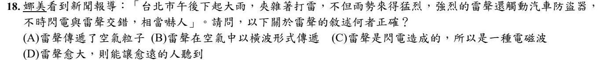
雷聲是聲波 → 力學波、縱波。先把這個身分認清楚，選項就好判斷。
(A) 聲波傳遞的是能量，空氣粒子只在原地前後振動，不會跟著跑過來。
(B) 聲波在空氣中是縱波（疏密波），不是橫波。
(C) 閃電的「光」才是電磁波；雷聲是空氣受熱急速膨脹振動產生的聲波。
(D) 雷聲愈大 ＝ 振幅愈大、能量愈多，傳得比較遠還聽得到 ✓
有關波的性質敘述，下列何者正確？
- (A) 介質隨著波的行進方向而傳播出去
- (B) 波只能傳遞能量，不能傳遞介質
- (C) 不需依靠介質傳遞的波動稱為力學波
- (D) 電磁波依據介質的運動方向分為橫波與縱波
(A) 介質不會跟著跑。(C) 需要介質的才叫力學波，不需要的是非力學波。(D) 電磁波根本不需要介質，談不上「介質的運動方向」。
正確的是 (B)：波只傳能量。
有關於橫波和縱波的敘述，下列何者錯誤？
- (A) 介質振動方向和波行進方向垂直的稱為橫波
- (B) 介質振動方向和波行進方向平行的稱為縱波
- (C) 一種介質只能產生其中一種波，不可能會產生兩種波
- (D) 不論是橫波或縱波，介質都不會跟著波動前進
反例就在講義裡：彈簧上下甩是橫波、前後推拉是縱波——同一條彈簧可以產生兩種波。所以 (C) 錯。
橫波或縱波看的是「你怎麼抖」，不是看介質是什麼。
有關橫波與縱波的區別，主要是根據下列哪一項特性？
- (A) 是否需要依靠介質的傳播
- (B) 介質振動方向與波動前進方向的關係
- (C) 具有能量的大小
- (D) 傳遞的遠近
分類有兩把尺，別搞混：
· 要不要介質 → 力學波／非力學波（那是 (A)）
· 介質振動方向和波前進方向垂直還是平行 → 橫波／縱波 ✓
手上下甩動一條繩子產生繩波（講義附圖），其振動情形與下列哪一種波動最為相似？
- (A) 聲波
- (B) 光波
- (C) 水波
- (D) 無線電波
繩波的身分：力學波＋橫波。找身分一樣的：
(A) 聲波是縱波 ✗ (B)(D) 光波、無線電波雖然是橫波，但它們是非力學波（不用介質）✗ (C) 水波＝力學波＋橫波 ✓
聲波在空氣中傳遞時，空氣分子的振動方向和波的傳遞方向是平行的，我們把這種波稱為什麼？
- (A) 橫波
- (B) 縱波
- (C) 非力學波
- (D) 電磁波
振動方向和前進方向平行 → 縱波（又叫疏密波）。聲波在空氣中就是縱波。
下列何者屬於力學波及縱波？
- (A) 上下甩動繩子造成的繩波
- (B) 前後壓縮彈簧產生的彈簧波
- (C) 輕輕拍打水面產生的水波
- (D) 左右甩動彈簧產生的彈簧波
四個都是力學波，關鍵在「縱波」：手的動作要和波前進方向同一條線。
(B) 前後推拉彈簧，波也是往前傳 → 平行 → 縱波 ✓。(D) 左右甩彈簧，波往前傳 → 垂直 → 橫波。
關於各種波及其傳播介質，下列配對何者錯誤？
- (A) 無線電波：電
- (B) 水波：水
- (C) 彈簧波：彈簧
- (D) 繩波：繩子
無線電波是電磁波，不需要介質，所以沒有「傳播介質」可以配對。(A) 錯。
下列何種波不需要經由介質來傳遞？
- (A) 繩波
- (B) 聲波
- (C) 水波
- (D) 光波
光從太陽穿過幾乎真空的太空照到地球——光波是非力學波，不需要介質。其他三個都要。
紅外線是屬於一種電磁波，傳播時不需要介質。請問電磁波是哪一種波？
- (A) 橫波
- (B) 縱波
- (C) 力學波
- (D) 以上皆非
電磁波（光、紅外線、無線電波）屬於橫波，課本「波的種類」表格把光波、無線電波放在非力學波，國中把它當橫波。
它不是力學波（不用介質），但「不是力學波」不等於「什麼都不是」——它仍然是橫波，所以不是 (D)。
下列有關波的敘述何者正確？
- (A) 聲波是高低波
- (B) 橫波其波的前進方向與介質的運動方向平行
- (C) 彈簧波必為縱波
- (D) 繩波必為橫波
(A) 聲波是疏密波（縱波），高低波是橫波的別名 ✗
(B) 橫波是「垂直」✗
(C) 彈簧左右甩也能做出橫波，不一定是縱波 ✗
(D) 繩子軟軟的，沒辦法前後推擠出疏密，只能甩出高低起伏 → 繩波一定是橫波 ✓
屬於力學波的有幾種？
- (A) 2 種
- (B) 3 種
- (C) 4 種
- (D) 5 種
五個都有一樣東西在晃：甲彩帶、乙彈簧、丙水、丁繩子、戊空氣——都靠介質傳，所以都是力學波，共 5 種。
容易漏掉的是甲「彩帶」：彩帶本身就是介質，揮動時的波浪就是力學波。
物質會隨著波而移動的有幾種？
- (A) 0 種
- (B) 1 種
- (C) 2 種
- (D) 3 種
不管哪一種波，介質都只在原地振動，不會跟著波跑。0 種。
屬於縱波有幾種？
- (A) 2 種
- (B) 3 種
- (C) 4 種
- (D) 5 種
縱波＝前後推拉、疏密相間：乙（壓縮拉長的彈簧）、戊（聲波），共 2 種。
甲彩帶、丙水波、丁繩波都是高低起伏的橫波。
就介質的振動方向而言，下列哪兩者的屬性相同？
- (A) 甲、乙
- (B) 乙、丙
- (C) 丙、丁
- (D) 丁、戊
先分隊：橫波＝甲、丙、丁；縱波＝乙、戊。
(A) 甲橫乙縱 ✗ (B) 乙縱丙橫 ✗ (C) 丙、丁都是橫波 ✓ (D) 丁橫戊縱 ✗
跳彩帶舞時，若彩帶振動方向是南北向，那麼彩帶上波的行進方向不可能是哪一個方向？
- (A) 向下
- (B) 向上
- (C) 向西
- (D) 向南
彩帶波是橫波：前進方向一定和振動方向垂直。
振動是南北向，前進方向就不可能是南或北 → (D) 向南不可能。向上、向下、向西都和南北垂直，都有可能。
關於疏密波的敘述，下列何者錯誤？
- (A) 疏密波又稱為橫波
- (B) 彈簧可以產生疏密波
- (C) 聲波屬於疏密波的一種
- (D) 相鄰兩疏部中點間的直線距離為波長
疏密波是縱波的別名；橫波的別名是高低波。(A) 錯。
(D) 縱波的波長＝相鄰兩密部（或兩疏部）中心的距離 ✓
第 3 章 ② 波的性質24 題
是。抖得愈用力，彈簧被拉離平衡位置愈遠 → 振幅愈大。
振幅由「波源給多少能量」決定；波速則由介質決定，和抖多大力無關。
官方答案：是。波傳過去時，介質各點是一個接一個開始振動的，步調不同——同一瞬間，有的點在最高點（速率 0）、有的點正通過平衡位置（速率最大），所以各點的振動速率不一樣。
⚠️ 補充：嚴格來說，相隔一個波長的兩點步調完全一樣，速率其實相同，「都不相同」講得太滿。本題官方答案是「是」，如果考試遇到類似敘述，請問老師這一題怎麼算。
否。和上一題同一個觀念：介質各點步調不同。同一瞬間，波形上有的點正往上、有的點正往下（下一題 112-17 就在考這個），振動方向不會全部相同。
這題是把 113 年那題的「速率都不相同」改成「方向都相同」——是非題就是改一兩個字，讀題要慢。
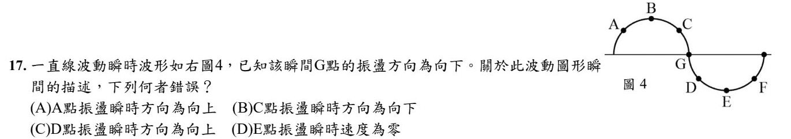
判斷方法：質點下一刻的高度，會變成「波傳來那一側」鄰居現在的高度。
G 正往下，而 G 右邊的鄰居（D）比較低、左邊（C）比較高 → G 是在學右邊 → 波由右往左傳。
接著每個點都看「右邊鄰居」：
A：右邊比較高 → 向上 ✓（(A) 對）
C：右邊是 G，比較低 → 向下 ✓（(B) 對）
D：右邊是 E，比較低 → 向下，(C) 說向上 ✗
E：在波谷，正要回頭，瞬間速度為零 ✓（(D) 對）
題目問錯誤的 → (C)。
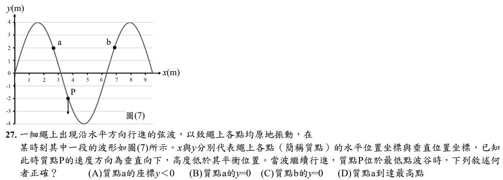
先判斷傳播方向：P 正往下，P 右邊的點比 P 低 → P 在「學右邊」→ 波向左傳。
P 要到波谷，就要讓右邊的波谷（x ≈ 4.7）移到 P（x ≈ 3.7）——整個波形往左平移約 1 公尺。
平移後，每個點的高度 ＝ 現在它右邊 1 公尺那個點的高度：
a（x ≈ 2.7）→ 讀 x ≈ 3.7 的高度，就是現在 P 的高度 −2 → y ＜ 0 ✓
b（x ≈ 6.9）→ 讀 x ≈ 7.9 的高度 → 波峰 4，到達最高點的是 b 不是 a。
所以 (A) 對；(B)(C)(D) 都不對。
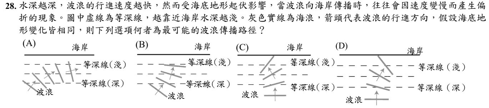
題目給了關鍵：愈靠近海岸水愈淺，波浪愈慢。
斜斜打過來的波浪，靠岸的那一端先進淺水、先變慢，另一端還在深水跑得快 → 波浪會慢慢轉正，波峰線愈來愈和海岸平行、前進方向愈來愈正對海岸 → (B)。
(A) 愈走愈斜，方向反了。(C)(D) 一開始就正對等深線前進，兩端同時變慢，不會轉彎，卻畫成歪掉。
這就是為什麼海浪幾乎都是「正面」打上沙灘的。和光的折射是同一個道理：速率改變 → 轉彎。
丟一個小石頭到池塘裡，在水面會產生漣漪。有關此漣漪的敘述，下列何者錯誤？
- (A) 傳遞此波動的介質是水
- (B) 此波動是屬於橫波
- (C) 同心圓的圓心即為小石子落水的地方
- (D) 水面上的葉子會隨波動前進
波只把能量傳出去，水本身只在原地上下晃。所以浮在水面的葉子也只會原地上下起伏，不會被波推走。
(A) 水波靠水傳 ✓ (B) 國中課本把水波當橫波（水面上下起伏、波往外跑）✓ (C) 漣漪從落水點往外擴散 ✓ → 錯的是 (D)。
小婷想撿拾一片漂浮在湖面的葉子，因此想利用「丟石頭產生漣漪」的方式使葉子漂到岸邊，請問此方法是否可行？
- (A) 可行，但要很用力丟石頭才行
- (B) 不可行，水波並不會把葉子推到岸邊
- (C) 可行，但葉子有可能越漂越遠
- (D) 不可行，水波會使葉子直接沉入水底
和上一題同一個道理：水波經過時，葉子只會在原地上下晃，波過去了它還在原地。丟再用力也只是晃得比較大。
雷聲由甲地傳到乙地時，雷聲傳遞了什麼？
- (A) 空氣
- (B) 密度
- (C) 能量
- (D) 介質
聲音是波，波傳的是能量。空氣（介質）只在原地前後振動，並沒有從甲地跑到乙地。
由兩種不同波動的相對運動位置關係來說，下圖(一)中的甲位置，相當於下圖(二)中的哪一個位置？
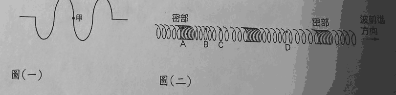
- (A) A
- (B) B
- (C) C
- (D) D
國中課本的對應方式：橫波的波峰 ↔ 縱波的密部；波谷 ↔ 疏部。
甲在波峰和波谷正中間（平衡位置上），所以對應到密部和疏部的正中間。圖(二)中 A 是密部中心、C 一帶是疏部，兩者中間是 B。
⚠ 這題答案取決於「怎麼對應」。照國中課本「波峰對密部」的對法是 (B)；若用高中物理的位移觀點，平衡位置反而是密部或疏部的中心。講義上孩子寫的是 (C)，請以老師講解的答案為準。
如右圖所示，波在傳播時，介質往返振動一次的路徑何者正確？
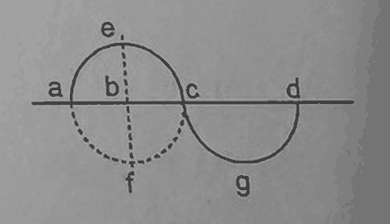
- (A) a→e→c→g→d
- (B) b→f→b→e→b
- (C) a→b→c→d
- (D) a→f→c→e
介質不會沿著波形跑——它只在自己的位置上上下下。
b 點的「一次往返」就是：b 往下到 f、回到 b、往上到 e、再回到 b → (B)。(A)(D) 是沿著波形走，那是「波形」在動，不是介質。
有一繩波與其運動方向如下圖所示，試問此繩中之 A、B 質點的運動方向為何？
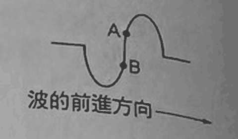
- (A) A 向右，B 向右
- (B) A 向下，B 向下
- (C) A 向上，B 向上
- (D) A 向上，B 向下
波向右走 → 波從左邊來 → 每個點看左邊的鄰居。
A、B 都在「波谷爬到波峰」那一段斜坡上，左邊鄰居都比較低 → 下一刻都要往下 → A、B 都向下。
(A) 繩上的點只會上下動，不會向右跑。
右圖有一正在向左傳遞的繩波，繩上 A、B 兩點的運動方向為何？
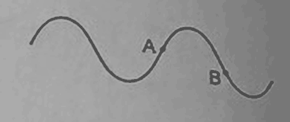
- (A) A 向右、B 向右
- (B) A 向下、B 向上
- (C) A 向左、B 向左
- (D) A 向上、B 向下
波向左走 → 看右邊的鄰居。
A 在往上爬的坡上，右邊鄰居比較高 → A 向上。B 在往下走的坡上，右邊鄰居比較低 → B 向下。
手持繩振出一繩波，如下圖所示。試問手持繩振動的先後順序方向何者較為合理？
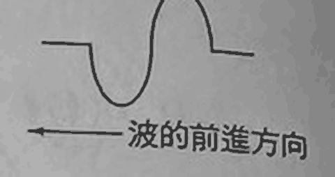
- (A) ↑↓↑↓
- (B) ↑↓↓↑
- (C) ↓↓↑↑
- (D) ↓↑↑↓
波向左跑，跑在最前面（最左邊）的部分是最早做出來的。
從左往右讀波形：先是一個波谷（手先往下↓、再拉回來↑），接著一個波峰（手往上↑、再拉回來↓）→ ↓↑↑↓。
爸爸帶小英環島旅遊，小英發現臺灣東西南北各地的海岸，海波都接近垂直入射海岸，這讓小英非常好奇，試問產生此現象最可能的原因為何？
- (A) 水波會打向海岸，故會接近垂直入射海岸
- (B) 水波傳得越接近海岸，水深越淺，波速越快，折射角越大
- (C) 水波傳得越接近海岸，水深越淺，波速越慢，折射角越小
- (D) 水波互相擠壓而接近垂直入射海岸
水波在淺水跑得慢。斜斜打過來的浪，靠岸那一端先進淺水、先變慢，另一端還在深水跑得快，整排浪就慢慢「轉正」，最後幾乎正對海岸。
速率變慢 → 往法線偏 → 折射角變小 → (C)。(B) 把淺水說成變快，方向反了。
如右圖所示，安妮觀察水波由左側的淺水區移向右側的深水區，過程中他所觀察到的圖形最接近下列何者？
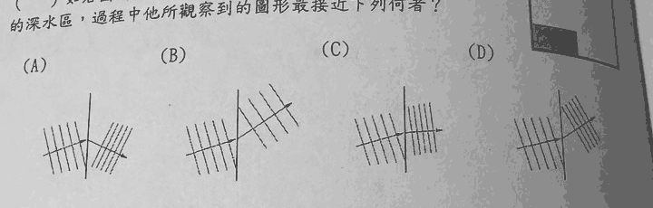
- (A) (A) 圖
- (B) (B) 圖
- (C) (C) 圖
- (D) (D) 圖
淺水 → 深水：波速變快。頻率不變，所以波長變長（右邊的波紋要比左邊稀）。
(C)(D) 右邊的波紋比較密，錯。剩 (A)(B)：速度變快時，前進方向會偏離法線（往交界線那邊倒），(B) 的箭頭進入深水後偏得更斜、波紋更稀 ✓。
抖動細繩的一端，則下列敘述何者正確？
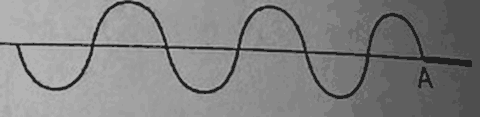
- (A) 當繩波傳到 A 點後，繩波會立即反彈與原來的波動完全抵消
- (B) 當繩波傳到 A 點後，繩波立刻消失
- (C) 當繩波傳到 A 點後，粗的繩子開始抖動
- (D) 細繩與粗繩的波速是相同的
波傳到交界 A，會把能量交給粗繩，粗繩跟著抖起來（同時也有一部分反彈回來，但不會「完全抵消」）。
(D) 細繩和粗繩是不同的介質，波速不一樣。
當波動傳到 A 點之後，會改變的性質有哪些？甲.頻率；乙.波長；丙.振幅；丁.波速。
- (A) 甲乙丙丁
- (B) 乙丙丁
- (C) 甲乙丁
- (D) 甲丙丁
頻率由波源決定：你的手一秒抖幾下，粗繩就一秒被帶幾下，頻率不變（甲不變）。
換了介質 → 波速變（丁）→ 波長 ＝ 波速 ÷ 頻率也跟著變（乙）；粗繩比較難甩動，振幅也會變（丙）。→ 乙丙丁。
當海嘯由深水區傳到淺水區時，其波速如何變化？
- (A) 變快
- (B) 變慢
- (C) 忽變快忽變慢
- (D) 維持不變
水波在淺水區跑得慢，所以海嘯靠近岸邊時會減速。
⚠ 小提醒：南亞大海嘯實際發生在 2004 年 12 月 26 日，講義寫 2005 年應是筆誤，不影響作答。
當海嘯由深水區傳到淺水區時，其振幅變化為何？
- (A) 變大
- (B) 變小
- (C) 忽變大忽變小
- (D) 維持不變
文章自己說了：海上只有 7 公分的小波浪，到岸邊變成 12 公尺高的巨浪 → 振幅變大。（波變慢、擠在一起，能量集中在比較淺的水裡，浪就堆高了。）
當海嘯由深水區傳到淺水區時，其波長如何變化？
- (A) 變長
- (B) 變短
- (C) 忽變長忽變短
- (D) 維持不變
頻率由波源決定、不會變；波速變慢 → 波長 ＝ 波速 ÷ 頻率 → 變短。
海浪形成的力量主要來自於？
- (A) 月亮的引力
- (B) 地球的引力
- (C) 太陽的引力
- (D) 風力
海面上一波一波的浪，主要是風吹出來的。（月亮的引力造成的是一天兩次的漲潮、退潮，不是浪。）
在湖邊有一艘小紙船，當有擾動時，此船會有何運動狀態？
- (A) 在水中原位置上下震盪起伏
- (B) 船會左右移動，並可能被移上岸
- (C) 船以繞圓的方式運動，並可能被移上岸
- (D) 船完全不動
介質（水）只在原地振動，浮在上面的紙船也跟著在原地上下起伏，不會被推走。
(C) 前半句「繞圓」和文章說的水分子運動有點像，但「可能被移上岸」就錯了——波不會把東西搬走。
球場看台上觀眾玩「波浪舞」，人浪從看台左邊一路傳到右邊。每一位觀眾自己是怎麼動的？
- (A) 跟著人浪從左邊跑到右邊
- (B) 在自己的座位上站起來、再坐下
- (C) 往人浪的反方向移動
- (D) 完全不動，只有人浪在動
人浪就是一個波：觀眾是介質，只在原地上下（站起、坐下），一個接一個開始動；往右跑的是「站起來」這個動作（能量、波形），不是人本身。
(D) 也不對：介質要振動，波形才傳得過去。
第 3 章 ③ 週期與頻率11 題
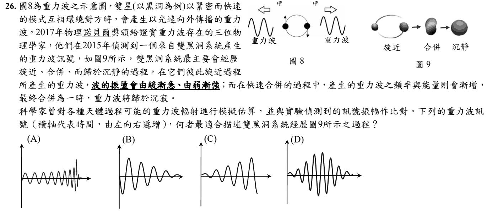
把文章的話翻成波形：「由緩漸急」＝頻率愈來愈高（波愈擠愈密），「由弱漸強」＝振幅愈來愈大；最後合併「歸於沉寂」＝訊號突然結束。
(A) 波愈來愈密、愈來愈高，然後突然收掉 ✓
(B) 振幅愈來愈小，相反。(C) 振幅變大，但疏密沒變（頻率不變）。(D) 先變大再變小，而且頻率沒變。
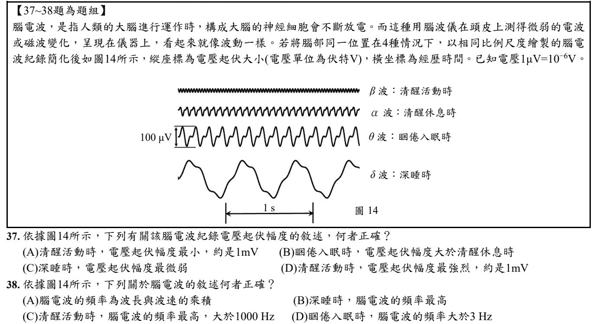
看圖中的比例尺：θ 波旁邊標了 100 μV。四條波用同樣比例畫，直接比高低就是比振幅。
θ 波（睏倦入眠）明顯比 α 波（清醒休息）高 → (B) ✓
(A)(D) β 波最小，但 1 mV ＝ 1000 μV，比 100 μV 還大十倍，數字不對。(C) δ 波（深睡）反而是起伏最大的。
頻率 ＝ 1 秒內有幾個完整的波。圖下方有 1 s 的長度可以對照。
θ 波在 1 s 的長度裡大約有 7 個波 → 約 7 Hz，大於 3 Hz ✓
(A) 頻率 ＝ 波速 ÷ 波長，不是乘積。(B) 深睡 δ 波最稀疏，頻率最低。(C) β 波頻率最高沒錯，但 1 秒內大約幾十個，遠遠不到 1000 Hz。
彈簧波每秒來回振動 2 次，經測量發現彈簧在 2 秒鐘內，前進了 20 公分，試問此彈簧波的週期為多少？
- (A) 2 赫
- (B) 0.5 赫
- (C) 2 秒
- (D) 0.5 秒
每秒振動 2 次 → 頻率 f ＝ 2 Hz。
週期 T ＝ 1 ÷ f ＝ 1 ÷ 2 ＝ 0.5 秒。
先看單位就能刪掉 (A)(B)：週期的單位是「秒」，不是「赫」。「前進 20 公分」是算波速用的，這題用不到。
右圖所示為一繩波，已知 A、B 間的距離為 5 公分，則此繩波的波長為多少？
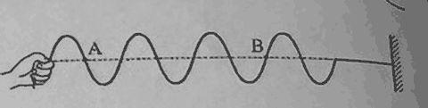
- (A) 5 公分
- (B) 4 公分
- (C) 2 公分
- (D) 1 公分
從 A 數到 B：A 和 B 都在平衡線上，中間有 2.5 個波（兩個完整波再加半個）。
波長 ＝ 5 ÷ 2.5 ＝ 2 公分。
此波的振幅為何？
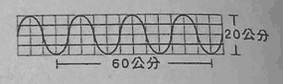
- (A) 10 公分
- (B) 20 公分
- (C) 30 公分
- (D) 60 公分
圖上的 20 公分是從波峰到波谷的高度。振幅是從平衡位置到波峰，只有一半 → 10 公分。
此波的週期為何？
- (A) 1/4 秒
- (B) 1/4 Hz
- (C) 4 秒
- (D) 4 Hz
整張圖是 1 秒內產生的，數一數有 4 個完整的波 → 1 秒振動 4 次 → 頻率 4 Hz。
週期 ＝ 1 ÷ 4 ＝ 1/4 秒。(D) 4 Hz 是頻率，不是週期。
此波的波長為何？
- (A) 60 公分
- (B) 30 公分
- (C) 20 公分
- (D) 10 公分
標著 60 公分的那一段裡面剛好有 3 個完整的波 → 波長 ＝ 60 ÷ 3 ＝ 20 公分。
小恩上下甩動一條長繩，90 秒內一共產生了 270 個完整的波。這個繩波的頻率和週期分別是多少？
- (A) 3 Hz，1/3 秒
- (B) 3 Hz，3 秒
- (C) 270 Hz，90 秒
- (D) 1/3 Hz，3 秒
頻率 ＝ 每秒產生幾個完整的波 ＝ 270 ÷ 90 ＝ 3 Hz。
週期 ＝ 產生一個完整的波要幾秒 ＝ 90 ÷ 270 ＝ 1/3 秒。週期和頻率互為倒數：3 × 1/3 ＝ 1 ✓
(B)(D) 把週期和頻率的倒數關係弄反了。
繩上某一點隨波上下振動。從平衡位置開始：0.05 秒時到最高點（平衡位置上方 8 cm），0.1 秒時回到平衡位置，0.15 秒時到最低點（下方 8 cm），0.2 秒時又回到平衡位置，接著重複同樣的運動。下列敘述何者正確？
- (A) 振幅是 16 cm
- (B) 週期是 0.1 秒
- (C) 頻率是 5 Hz
- (D) 波長是 0.2 cm
振動一個來回（平衡 → 最高 → 平衡 → 最低 → 平衡）花 0.2 秒 → 週期 ＝ 0.2 秒 → 頻率 ＝ 1 ÷ 0.2 ＝ 5 Hz。
(A) 振幅是平衡位置到最高點的距離 ＝ 8 cm，不是最高到最低的 16 cm。(B) 0.1 秒只走了半個來回。(D) 題目只描述一個點隨時間的運動，沒有給「空間上」波峰和波峰的距離，算不出波長。
健身房的「戰繩」是兩手握住粗繩甩動、讓繩子產生波。想在同樣的時間內讓繩子上出現更多個波，應該怎麼做？
- (A) 用更大的力氣甩，甩得更高
- (B) 手腕擺動得更快
- (C) 手腕擺動得更慢
- (D) 改成左右甩
同樣時間內波變多 ＝ 頻率變大。頻率由振源決定 → 手擺得愈快，頻率愈大。
(A) 甩得更高只會讓振幅變大（波變高），波的個數不變。(D) 改變振動方向不會改變頻率。
第 3 章 ④ 週期、頻率與波速的關係20 題
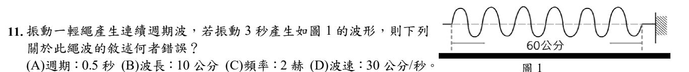
數圖：60 公分裡有 6 個完整的波 → 波長 ＝ 60 ÷ 6 ＝ 10 公分。
3 秒產生 6 個波 → 頻率 ＝ 6 ÷ 3 ＝ 2 赫，週期 ＝ 1 ÷ 2 ＝ 0.5 秒。
波速 ＝ 波長 × 頻率 ＝ 10 × 2 ＝ 20 公分/秒（或 60 公分 ÷ 3 秒）。(D) 寫 30，錯。
波速由介質（這條繩子）決定，你怎麼甩它都不變。
週期變 2 倍 → 頻率變一半 → 波長 ＝ 波速 ÷ 頻率 → 波長變 2 倍。
(A)(B)(D) 都以為波速會變，第一步就錯了。
否。甩得快只是頻率變大；同一條繩子，波速不變。
頻率變大、波速不變 → 變的是波長變短（波變密）。
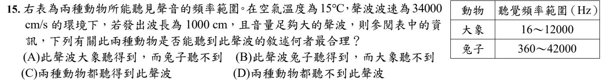
先算頻率：f ＝ 波速 ÷ 波長 ＝ 34000 ÷ 1000 ＝ 34 Hz（單位都是公分，可以直接除）。
大象聽 16～12000 Hz → 34 在範圍內，聽得到；兔子聽 360～42000 Hz → 34 太低，聽不到 → (A)。
下列為同一條繩索在同一時間振動出的繩波，請問哪一個週期最大？
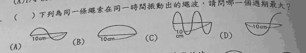
- (A) (A) 圖
- (B) (B) 圖
- (C) (C) 圖
- (D) (D) 圖
同一條繩子 → 波速一樣。波速 ＝ 波長 ÷ 週期，波速固定時，波長愈長，週期就愈大。
所以只要找波長最長的：(A) 10 cm 裡有一整個波 → 波長 10 cm；(B) 10 cm 只有半個波（一個拱）→ 波長 20 cm，最長。
⚠ (C)(D) 兩張圖的「10 cm」標在哪一段，照片上看不太清楚；判讀以 (B) 波長最長。若紙本上看起來不同，請以老師答案為準。
如右圖所示，若將振動頻率加倍，則波將如何變化？
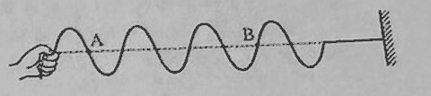
- (A) 波速變慢
- (B) 波長增長
- (C) 波自 A 傳到 B 的時間減少
- (D) AB 間波數增加
同一條繩子 → 波速不變，所以 (A) 錯，(C) 也錯（速度沒變、距離沒變，時間就不變）。
頻率加倍 → 波長減半（變短）→ (B) 錯。波長變短，同一段 AB 裡就擠得下更多個波 → (D) ✓
若繩上週期波的頻率變為原來的 3 倍，則下列敘述何者正確？甲.波速不變；乙.波速變為原來的 3 倍；丙.週期變為原來的 1/3 倍；丁.波長變為原來的 3 倍；戊.波長不變。
- (A) 甲乙丙
- (B) 乙丙丁
- (C) 甲丙
- (D) 甲丙丁
同一條繩子，波速不變（甲 ✓、乙 ✗）。週期 ＝ 1 ÷ 頻率 → 變 1/3（丙 ✓）。
波長 ＝ 波速 ÷ 頻率 → 頻率 3 倍，波長變 1/3（丁 ✗、戊 ✗）。正確的是甲丙。
若波在相同狀態下的同一介質中傳播，當頻率變小時，下列何種改變是正確的？
- (A) 波長變長
- (B) 波長變短
- (C) 波速變快
- (D) 波速變慢
同一介質、同一狀態 → 波速固定。波長 ＝ 波速 ÷ 頻率，頻率變小 → 波長變長。
有一水波每秒振動 5 次，且測得此波長為 2 公分，則其傳播速率為多少？
- (A) 10 公分／秒
- (B) 7 公分／秒
- (C) 5 公分／秒
- (D) 2.5 公分／秒
每秒 5 次 → f ＝ 5 Hz。波速 ＝ f × λ ＝ 5 × 2 ＝ 10 公分／秒。
右圖是用手做前後完整振動產生的一個彈簧波形，若甲、乙相距 40 公分，密部由甲傳到乙共花了 4 秒鐘，試問此彈簧波的波速為何？
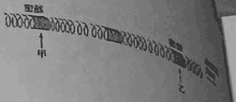
- (A) 160
- (B) 20
- (C) 10
- (D) 2 （單位：公分／秒）
波速 ＝ 波走的距離 ÷ 花的時間 ＝ 40 ÷ 4 ＝ 10 公分／秒。
這題不必知道波長或頻率，直接用「距離 ÷ 時間」最快。
將某繩波的振動頻率增加為 2 倍，試問此繩子的波速與波長將會如何改變？
- (A) 波速增加為 2 倍，波長變為原來的 1/2
- (B) 波速增加為 2 倍，波長不改變
- (C) 波速不改變，波長變為原來的 1/2
- (D) 波速與波長皆增加為 2 倍
還是那一句：同一條繩子，波速不變，(A)(B)(D) 第一步就錯。頻率 2 倍 → 波長 1/2。
經過 1 秒後，繩波的波形為下列何者？
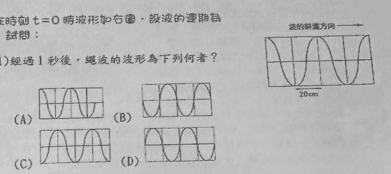
- (A) (A) 圖
- (B) (B) 圖
- (C) (C) 圖
- (D) (D) 圖
1 秒 ÷ 0.4 秒 ＝ 2.5 個週期。每過一個週期，波形又變回一模一樣；多出來的 0.5 個週期，波形往前推了半個波長——波峰變波谷、波谷變波峰。
原圖左邊是波峰 → 1 秒後左邊變成波谷，其餘位置上下顛倒 → (C)。
此繩波之波速為何（cm/s）？
- (A) 50
- (B) 100
- (C) 150
- (D) 200
圖下的 20 cm 是一格的寬度；一個完整的波（波谷到下一個波谷）佔 2 格 ＝ 40 cm。
波速 ＝ 波長 ÷ 週期 ＝ 40 ÷ 0.4 ＝ 100 cm/s。
此繩波之頻率為多少？
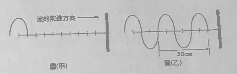
- (A) 5 Hz
- (B) 7.5 Hz
- (C) 10 Hz
- (D) 12.5 Hz
先算波長：圖(乙)的 30 cm 裡有 1.5 個波 → 波長 ＝ 30 ÷ 1.5 ＝ 20 cm。
再數 0.2 秒做出幾個波：圖(甲)只有半個波，圖(乙)有 2.5 個波 → 0.2 秒多做了 2 個波。
頻率 ＝ 2 ÷ 0.2 ＝ 10 Hz。
此繩波之波速為多少？
- (A) 100 cm/s
- (B) 150 cm/s
- (C) 200 cm/s
- (D) 300 cm/s
波速 ＝ 頻率 × 波長 ＝ 10 × 20 ＝ 200 cm/s。
驗算：0.2 秒內波的前端從圖(甲)的位置跑到圖(乙)的位置，前進了約 40 cm，40 ÷ 0.2 ＝ 200 ✓
若有一水波上下起伏的週期為 2 秒鐘，波長為 20 公分，則該波浪的速率約為多少？
- (A) 40
- (B) 30
- (C) 20
- (D) 10 （單位：公分／秒）
波速 ＝ 波長 ÷ 週期 ＝ 20 ÷ 2 ＝ 10 公分／秒。
每分鐘 20 次 → 波長 0.9 m
每分鐘 40 次 → 波長 0.45 m
每分鐘 60 次 → 波長 0.3 m
由這些數據，可以得到下列哪一個結論？
- (A) 推拉次數愈多，週期愈長
- (B) 推拉次數愈多，相鄰兩個密部的距離愈長
- (C) 不論推拉幾次，這條彈簧上的波速都相同
- (D) 推拉次數愈多，波速愈快
每一組算一次 波速 ＝ 頻率 × 波長（頻率要換成每秒幾次）：
20/60 × 0.9 ＝ 0.3；40/60 × 0.45 ＝ 0.3；60/60 × 0.3 ＝ 0.3 → 波速都是 0.3 m/s。同一條彈簧（同一介質），波速不變；推得快，只是波長變短。
(A) 次數多 → 頻率大 → 週期短。(B) 相鄰密部的距離就是波長，次數多反而變短。(D) 與計算結果矛盾。
每分鐘 20 次 → 波長 0.9 m
每分鐘 40 次 → 波長 0.45 m
每分鐘 60 次 → 波長 0.3 m
承上題，每分鐘推拉 60 次時，這個彈簧波的週期是多少？
- (A) 60 秒
- (B) 1 秒
- (C) 0.3 秒
- (D) 1/60 秒
每分鐘 60 次 ＝ 每秒 1 次 → 頻率 1 Hz → 週期 ＝ 1 ÷ 1 ＝ 1 秒。
(A) 60 秒是「一分鐘」，不是推一次的時間。(D) 1/60 秒是把「每分鐘 60 次」誤當成「每秒 60 次」。
沉入海中的飛機黑盒子會發出頻率 30000 Hz 的定位聲波。若海水中的聲速是 1500 m/s，這個聲波在海水中的波長是多少？
- (A) 0.05 cm
- (B) 0.5 cm
- (C) 5 cm
- (D) 20 cm
波長 ＝ 波速 ÷ 頻率 ＝ 1500 ÷ 30000 ＝ 0.05 m ＝ 5 cm。
(A)(B) 是公尺換公分時小數點移錯了位置（1 m ＝ 100 cm）。(D) 20 是 30000 ÷ 1500，把除法倒過來了。
長鬚鯨叫聲的頻率約 20 Hz，有一頭被稱為「52 赫茲」的鯨魚，叫聲頻率是 52 Hz。在同一片海水中比較兩者的聲音，下列何者正確？
- (A) 長鬚鯨叫聲的週期比較短
- (B) 「52 赫茲」的叫聲在海水中跑得比較快
- (C) 長鬚鯨叫聲的波長比較長
- (D) 頻率高的「52 赫茲」，叫聲一定傳得比較遠
同一片海水 → 聲速一樣。波長 ＝ 聲速 ÷ 頻率，頻率愈低，波長愈長 → 長鬚鯨（20 Hz）的波長比較長。
(A) 頻率低 → 週期長。(B) 聲速由介質決定，和頻率無關。(D) 傳多遠主要和聲音的響度（振幅）有關，不是頻率高就傳得遠。
第 3 章 ⑤ 聲波產生的條件13 題
否。聲波是力學波，一定要有介質（固體、液體、氣體都行）。真空裡沒有粒子可以推來推去，傳不過去。
真空鐘罩實驗：抽掉空氣，鬧鐘還在振動，但聲音愈來愈小。
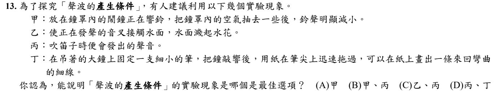
課本的「聲波產生的條件」有兩個：① 發聲體振動 ② 有介質傳播。
甲：抽掉空氣，鈴聲變小 → 證明需要介質（真空鐘罩實驗）✓
乙：音叉碰水濺起水花 → 證明發聲的物體在振動 ✓
丁：鐘上的筆畫出來回彎曲的線 → 也是證明在振動 ✓
丙：吹笛子會發出聲音——只是「有聲音」這個現象，沒有說明任何條件 ✗
四個選項中，只有 (A) 沒有放進丙，所以選 (A)。
⚠️ 補充：照道理「乙、丁」也是好答案，但選項裡沒有這個組合。這題是自行解出的，請問老師這一題怎麼算。
下列有關聲音的敘述，何者正確？
- (A) 聲音只能在空氣中傳播
- (B) 在空氣中傳播的聲波是一種橫波
- (C) 聲音在空氣中傳播時，空氣隨聲波前進
- (D) 聲音在空氣中傳播時，空氣隨發音體振動
(A) 水、固體也能傳聲 ✗ (B) 空氣中的聲波是縱波 ✗ (C) 空氣不會跟著跑 ✗
(D) 發音體前後振動，推著旁邊的空氣以同樣的頻率前後振動 ✓
下述有關聲波傳播性質的說法，何者正確？
- (A) 聲波無法從空氣中傳入水中
- (B) 重敲和輕敲同一支音叉時，所發出聲波的波長不一樣
- (C) 打鼓時打的越快，所發出的聲音頻率越高
- (D) 聲波在空氣中傳播時，空氣分子的振動方向和聲波前進方向平行
(A) 在岸上喊，水裡的人聽得到 ✗。(B) 輕重只改變振幅（響度），音叉的頻率固定、波長也一樣 ✗。
(C) 打得快只是「咚咚咚」的次數變多，每一聲的音高由鼓皮振動頻率決定，不會因此變高 ✗。(D) 縱波 ✓
當一顆很大的流星撞擊到月球時，正在撞擊地附近的太空人聽得到嗎？
- (A) 能，因為月球上有大氣層能傳遞聲音
- (B) 不能，因為太空中缺少傳聲介質
- (C) 能，因為聲音的傳遞不需要靠介質
- (D) 不能，因為撞擊時產生的力量不夠大
月球幾乎沒有空氣 → 沒有傳聲的介質 → 聽不到。
延伸想想：太空人的腳踩在月面上，地面的振動有可能經由身體「感覺」到——但那是透過固體傳，不是在空氣中聽到。
科學家發現月球上面有許多大大小小的隕石坑，代表月球曾經受到隕石的撞擊。若已知月球距離地球 38 萬公里，而聲速每秒 340 公尺，則當月球受到隕石撞擊後大約多少天，地球上的人類可以聽到爆炸聲？
- (A) 12 天
- (B) 13 天
- (C) 14 天
- (D) 無法聽見
陷阱題：月球和地球之間是真空，聲音根本傳不過來，算多少天都沒用 → 無法聽見。
如果硬算：380000000 ÷ 340 ≈ 1117647 秒 ≈ 12.9 天——這就是 (A)(B)(C) 在等你上鉤的數字。
將振動的音叉放入水中時，可以看見下列何種現象？
- (A) 水花四濺
- (B) 水面沒有變化
- (C) 水中產生漩渦
- (D) 水汽化成水蒸氣
正在發聲的音叉其實在快速振動，放進水裡會把水打得水花四濺——這就是「聲音由振動產生」的證據。
波以耳將抽氣機接在一裝有鈴鐺的容器上，並抽走容器內的空氣，當空氣完全被抽走時，便聽不見容器內傳出的鈴聲。試問此實驗證明了聲波的何種性質？
- (A) 聲波是一種縱波
- (B) 聲波的傳播需要介質
- (C) 聲波的傳播速率與介質狀態有關
- (D) 聲音是由物體振動而產生的
鈴鐺還在響（還在振動），只是空氣沒了就聽不到 → 證明聲音要靠介質傳。
將電鈴放在裝有抽氣機的鐘罩內，通電後發現鈴槌振動時可以聽見鈴聲，但隨著鐘罩內空氣漸漸被抽出後，鈴聲漸漸變小，最後聽不見鈴聲，其原因為何？
- (A) 鈴聲全部被抽氣機抽走了
- (B) 缺乏空氣當作傳聲介質，所以鈴聲無法傳遞
- (C) 空氣變少使頻率降低至人耳無法聽見
- (D) 鈴聲被鐘罩完全吸收
和上一題同一個實驗：空氣變少 → 傳聲的介質變少 → 聲音愈來愈小、最後傳不出來。頻率並沒有改變（(C) 錯）。
當他連續敲打大鼓時，則蠟燭附近的空氣密度變化何者正確？（設每次敲打的力量均相同）
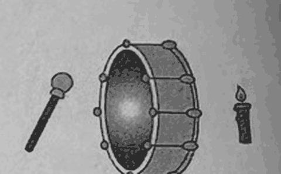
- (A) 忽大忽小
- (B) 一直增大
- (C) 一直減小
- (D) 毫無變化
鼓皮前後振動，傳出來的是一疏一密的聲波：密部經過時空氣密度大、疏部經過時密度小 → 忽大忽小。
當他連續敲打大鼓時，此時燭火會有怎樣的變化？
- (A) 上下跳動
- (B) 靜止不動
- (C) 左右晃動
- (D) 火焰逐漸變大
聲波從鼓往蠟燭方向（左右方向）傳，是縱波，空氣沿著同一個方向前後推擠 → 燭火左右晃動。
由此實驗可證明聲波的屬性為何？
- (A) 力學波、橫波
- (B) 力學波、縱波
- (C) 非力學波、橫波
- (D) 非力學波、縱波
靠空氣傳 → 力學波；燭火沿傳播方向左右晃 → 縱波。
跨年夜煙火在高空炸開，地上的人聽到「碰」的一聲。這個聲音主要是怎麼產生、傳過來的？
- (A) 是火光變成了聲音
- (B) 爆炸讓周圍的空氣劇烈振動，振動經由空氣一路傳到耳朵
- (C) 火藥的碎屑飛進耳朵
- (D) 爆炸後的白煙飄過來撞到耳朵
聲音的產生要有振動，傳播要有介質。爆炸瞬間把周圍空氣猛力推開，空氣一疏一密地振動，這個振動（能量）經由空氣傳到我們的耳朵。
(A) 光和聲音是兩種不同的波，光不會變成聲音。(C)(D) 波傳的是能量，不是把物質送過來。
第 3 章 ⑥ 聲速與介質21 題
是。固體 ＞ 液體 ＞ 氣體。粒子排得愈緊密，振動傳得愈快。
大約數字：空氣 340 m/s、水 1500 m/s、鋼 5000 m/s。
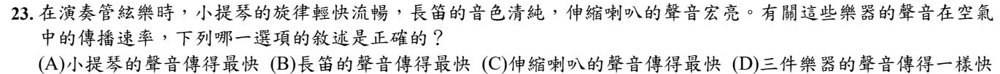
波速由介質決定，不由聲源決定。三件樂器都在同一個空氣裡，所以都是每秒 340 公尺。
可以用一個生活經驗檢查：如果不同樂器的聲音跑得不一樣快，整個樂團從第一排聽起來就會變成一團爛泥——低音先到、高音後到。但實際上不會，所以速度一定一樣。
題目故意把「輕快、清純、宏亮」三個形容詞塞給你，那些講的是音調、音色、響度——沒有一個和速度有關。
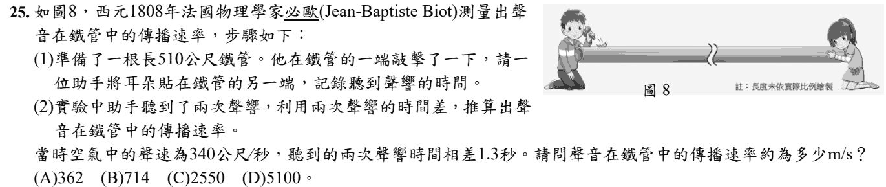
助手聽到兩次聲響：先到的走鐵管（快），後到的走空氣（慢）。
空氣：510 ÷ 340 ＝ 1.5 秒。鐵管比它早 1.3 秒 → 1.5 − 1.3 ＝ 0.2 秒。
鐵管中的聲速 ＝ 510 ÷ 0.2 ＝ 2550 m/s。
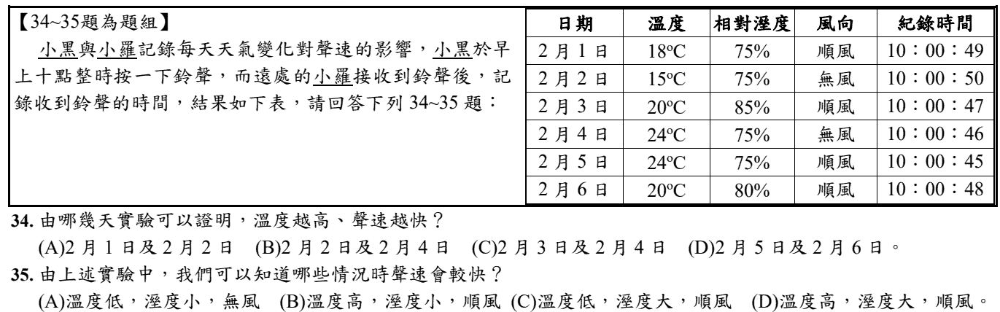
要證明「溫度」的影響，就要找只有溫度不同、其他條件都一樣的兩天（控制變因）。
2/2（15°C、75%、無風）和 2/4（24°C、75%、無風）：只差溫度 ✓。溫度高的 2/4 比較早收到（:46 比 :50）→ 溫度高，聲速快。
(A) 風向也不同。(C) 濕度和風向都不同。(D) 濕度也不同。
一樣用「只差一個條件」來比：
溫度：2/2 vs 2/4 → 溫度高比較快。
濕度：2/3（85%）vs 2/6（80%），其他相同 → 濕度大比較快（:47 比 :48）。
風向：2/4（無風）vs 2/5（順風），其他相同 → 順風比較快（:45 比 :46）。
→ 溫度高、濕度大、順風 → (D)。
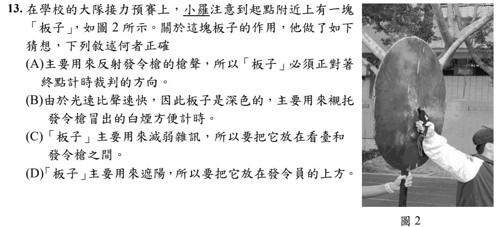
關鍵：光速遠遠比聲速快。
終點的計時員離起點約 100 公尺，槍聲要約 0.3 秒才傳到；但看到發令槍冒煙幾乎是瞬間。所以計時要看煙按錶，不是聽槍聲。深色板子當背景，白煙才看得清楚 → (B)。
(A) 板子不是拿來反射槍聲的。(C)(D) 和計時無關。
下列有關聲波的敘述，何者正確？
- (A) 彈琴彈得越快，所發出的聲波也傳得越快
- (B) 重敲和輕敲同一支音叉時，所發出的聲波頻率相同
- (C) 聲波無法從水中傳入空氣
- (D) 聲波在空氣中的傳播速率比在固體中快
(A) 聲速只看介質，不看你彈多快 ✗。(B) 音叉頻率固定，輕重只改變響度 ✓。(C) 水中的聲音可以傳到空氣 ✗。(D) 固體最快、氣體最慢，說反了 ✗。
聲波的傳播速率會受到介質狀態（固態、液態、氣態）的影響，其速率由快而慢依序為何？
- (A) 氣態＞液態＞固態
- (B) 固態＞液態＞氣態
- (C) 液態＞氣態＞固態
- (D) 氣態＞固態＞液態
粒子排得愈緊密，振動傳得愈快：固 ＞ 液 ＞ 氣（鐵 5032、水 1463、空氣 340 m/s）。
聲音在下列何種介質中，傳播的速率最慢？
- (A) 10°C 的水中
- (B) 10°C 的空氣中
- (C) 30°C 的木塊
- (D) 30°C 的空氣中
先比狀態：空氣最慢，剩 (B)(D)。再比溫度：同樣是空氣，溫度低的比較慢 → 10°C 的空氣。
聲音在下列哪種介質中傳播速率最快？
- (A) 20°C 的水
- (B) 20°C 的鋼鐵
- (C) 20°C 的空氣
- (D) 15°C 的鋼鐵
固體最快 → 剩 (B)(D) 兩個鋼鐵；溫度高一點的 20°C 那個勝出。
小如走在集集火車站的鐵軌上，當火車快要進站時，他發現鐵軌先產生振動，才聽見火車的聲音，請問造成此現象的原因為何？
- (A) 當地地震頻繁
- (B) 空氣的傳聲速率比鐵軌快
- (C) 鐵軌的傳聲速率比空氣快
- (D) 太多人在鐵軌上走動
同一個火車聲，一路走鐵軌（固體，很快）、一路走空氣（很慢），鐵軌那一路先到。
關於聲波的敘述，下列何者正確？
- (A) 在空氣中傳播的聲波，在真空中亦可傳播
- (B) 講話講得越慢，則所發出的聲波就傳得越慢
- (C) 在同一地點大聲喊叫和小聲交談所發出的聲波，其傳播速率相同
- (D) 頻率高和頻率低的聲波，其傳播速率一定不相同
聲速只由介質決定。同一地點 → 同一種空氣 → 大聲小聲、高音低音都一樣快。(C) ✓，(B)(D) ✗；(A) 真空不能傳聲。
關於聲音傳遞快慢的情形，下列敘述何者正確？
- (A) 逆風說話，傳得較慢
- (B) 說得越急，傳得越快
- (C) 聲音越高亢，傳得越快
- (D) 聲音越低，傳得越慢
風會「推一把」或「擋一下」：逆風較慢、順風較快。說話急不急、聲音高不高都不影響聲速。
游泳比賽時，啦啦隊對著游泳選手加油，當加油聲傳到水中時，下列各項波的性質何者不變？
- (A) 聲速
- (B) 頻率
- (C) 波長
- (D) 傳遞介質
從空氣進到水：介質換了（D 變），聲速變快（A 變），所以波長也變（C 變）。
頻率由發聲的人決定，換了介質也不變 → (B)。這就是為什麼在水裡聽到的音高還是一樣。
婷婷將沖天炮直立於地面，點燃後筆直射向高空，看到沖天炮爆炸後，過了 0.5 秒才聽見爆炸聲。已知當時的聲速為 340 公尺／秒，則沖天炮爆炸點與婷婷的距離約為多少？
- (A) 680 公尺
- (B) 340 公尺
- (C) 170 公尺
- (D) 85 公尺
光幾乎瞬間到，所以 0.5 秒全部是聲音在路上的時間。距離 ＝ 340 × 0.5 ＝ 170 公尺。
這題聲音只走單程（爆炸點 → 婷婷），不要像回聲題一樣除以 2。
| 日期 | 溫度 | 相對溼度 | 風向 | 紀錄時間 |
|---|---|---|---|---|
| 8 月 1 日 | 28°C | 25% | 順風 | 10:01:39 |
| 8 月 2 日 | 28°C | 25% | 無風 | 10:01:40 |
| 8 月 3 日 | 30°C | 35% | 順風 | 10:01:37 |
| 8 月 4 日 | 34°C | 25% | 無風 | 10:01:36 |
| 8 月 5 日 | 34°C | 32% | 無風 | 10:01:35 |
| 8 月 6 日 | 30°C | 30% | 順風 | 10:01:38 |
由哪幾天實驗可以證明，溫度越高聲速越快？
- (A) 8 月 1 日及 8 月 2 日
- (B) 8 月 2 日及 8 月 4 日
- (C) 8 月 3 日及 8 月 4 日
- (D) 8 月 5 日及 8 月 6 日
要證明「溫度」的影響，就只能讓溫度不同，其他（濕度、風向）都相同。
8/2：28°C、25%、無風；8/4：34°C、25%、無風 → 只有溫度不同 ✓。8/4 的聲音比較早到（10:01:36 比 :40 早），溫度高的比較快。
(A) 溫度相同 ✗。(C) 濕度、風向都不同 ✗。(D) 濕度、風向都不同 ✗。
| 日期 | 溫度 | 相對溼度 | 風向 | 紀錄時間 |
|---|---|---|---|---|
| 8 月 1 日 | 28°C | 25% | 順風 | 10:01:39 |
| 8 月 2 日 | 28°C | 25% | 無風 | 10:01:40 |
| 8 月 3 日 | 30°C | 35% | 順風 | 10:01:37 |
| 8 月 4 日 | 34°C | 25% | 無風 | 10:01:36 |
| 8 月 5 日 | 34°C | 32% | 無風 | 10:01:35 |
| 8 月 6 日 | 30°C | 30% | 順風 | 10:01:38 |
由上述實驗中，我們可以知道哪些情況時聲速會較快？
- (A) 溫度低，溼度小，無風
- (B) 溫度高，溼度小，順風
- (C) 溫度低，溼度大，順風
- (D) 溫度高，溼度大，順風
三個條件各自比一次：溫度高較快（8/2 vs 8/4）；順風較快（8/1 vs 8/2）；濕度大較快（8/4 vs 8/5，34°C 無風，32% 的比較早到）。
全部湊起來 → 溫度高、溼度大、順風 → (D)。
| 日期 | 溫度 | 相對溼度 | 風向 | 紀錄時間 |
|---|---|---|---|---|
| 8 月 1 日 | 28°C | 25% | 順風 | 10:01:39 |
| 8 月 2 日 | 28°C | 25% | 無風 | 10:01:40 |
| 8 月 3 日 | 30°C | 35% | 順風 | 10:01:37 |
| 8 月 4 日 | 34°C | 25% | 無風 | 10:01:36 |
| 8 月 5 日 | 34°C | 32% | 無風 | 10:01:35 |
| 8 月 6 日 | 30°C | 30% | 順風 | 10:01:38 |
若 8 月 2 日當天的聲速為 350 公尺／秒，則兩人的距離約為多少公里？
- (A) 14
- (B) 35
- (C) 43
- (D) 70
8/2 從 10:00:00 到 10:01:40，共 100 秒。距離 ＝ 350 × 100 ＝ 35000 公尺 ＝ 35 公里。
元元和倫倫在同一個空間裡向對面的方方大喊，元元的聲音小、倫倫的聲音大。若兩人與方方的距離均相等，請問方方會先聽到誰的聲音？
- (A) 元元
- (B) 倫倫
- (C) 無法判斷
- (D) 同時聽到
聲音大小（響度）不影響聲速。同一個空間、同樣距離 → 同時聽到。
空氣中的聲速可用「聲速（m/s）＝ 331 ＋ 0.6 × 氣溫（℃）」估算。氣溫 25 ℃ 時，聲速約為多少？
- (A) 331 m/s
- (B) 340 m/s
- (C) 346 m/s
- (D) 356 m/s
331 ＋ 0.6 × 25 ＝ 331 ＋ 15 ＝ 346 m/s。
(A) 是 0 ℃ 的聲速。(B) 340 m/s 是約 15 ℃ 時的常用值。氣溫愈高，空氣中的聲速愈快。
海豚在水中發出的叫聲，有一部分傳到了水面上的空氣中。聲音從水中進入空氣時，下列敘述何者正確？
- (A) 頻率變大
- (B) 聲速變慢
- (C) 波長變長
- (D) 頻率變小
聲速：液體 ＞ 氣體，所以從水進入空氣，聲速變慢。
(A)(D) 頻率由發聲的海豚決定，換介質也不會變。(C) 波長 ＝ 聲速 ÷ 頻率：頻率不變、聲速變慢 → 波長變短。
第 3 章 ⑦ 聲波的反射與超聲波45 題
否。超聲波是指「頻率」高於 20000 Hz（人耳聽不到）的聲波，和速度無關。
在同一種介質裡，超聲波和一般聲音跑得一樣快。
否。地毯、窗簾、海綿這類柔軟、多孔的東西會吸收聲音，不容易反射。
容易反射聲音的是堅硬、光滑的表面，例如磁磚牆、玻璃。
是。這題就是上一題 113 年是非題第 7 題的「改正版」：地毯柔軟多孔，會吸收聲音 → 不易反射。
回聲太大 ＝ 聲音反射太多。要減少反射，就加上會吸收聲音的材料 → 窗簾、絨布幔 ✓
(B) 東西清空，空房間回聲反而更大。(C) 天花板形狀對稱和吸音無關。(D) 牆面平整光滑，反射更強，回聲更大。
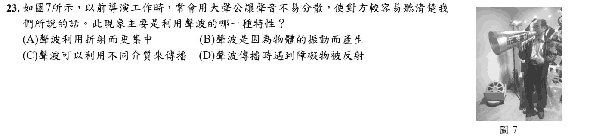
大聲公是一個喇叭形的筒子：聲音往旁邊散的部分，碰到筒壁會反射回來、集中往前方送出去 → (D)。
(A) 折射是聲音進入另一種介質才發生，大聲公裡外都是空氣。(B)(C) 是真的，但不是大聲公的原理。
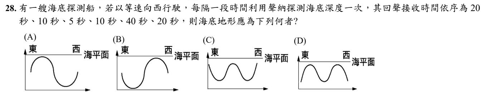
回聲時間愈長 ＝ 海底愈深（聲速固定，深度和時間成正比）。
船往西開，所以第一筆在最東邊。20 → 10 → 5 → 10 → 40 → 20 秒，翻成地形：
中等深 → 變淺 → 最淺（隆起）→ 變深 → 最深（海溝）→ 又淺一點。
圖的左邊是東、右邊是西：先往上隆起、再往下凹到最深 → (A)。
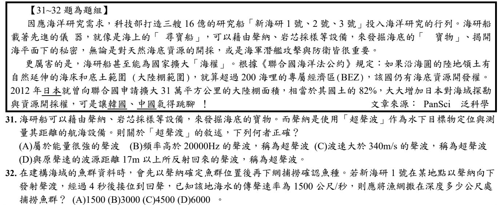
「超」指的是超出人耳可聽範圍的上限（約 20000 Hz），定義完全建立在頻率上。
(A) 能量強弱是響度的事，和超不超聲無關。
(C) 波速由介質決定，不會因為頻率高就變快。
(D) 17 公尺那個數字講的是回聲——聲音來回 34 公尺約 0.1 秒，人耳才分得出是兩個聲音。那是另一個概念。
(D) 是很漂亮的誘餌：它把一個真的、但屬於別題的知識放進來。段考很愛這樣考。
4 秒是來回的時間，單程只有 2 秒。
深度 ＝ 1500 × 2 ＝ 3000 公尺。
(D) 6000 就是忘了除以 2 的答案——這是回聲測距題最大的坑，幾乎每次都有人踩。
看到「發射→接收」「回聲」「聲納」「雷達」，第一個動作永遠是先把時間砍一半。
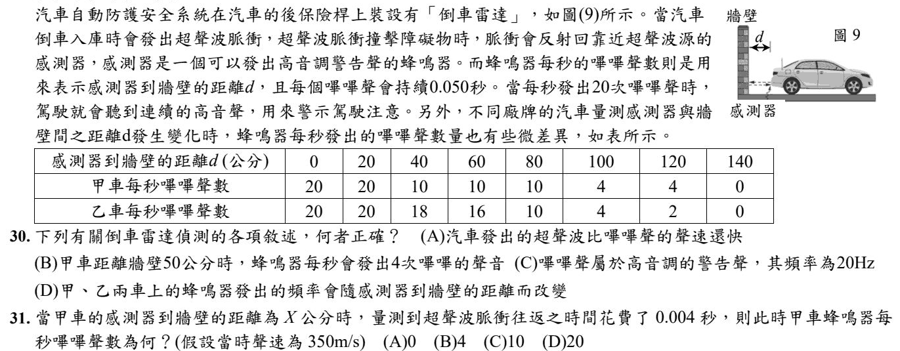
(A) 同一個空氣裡，超聲波和嗶嗶聲聲速一樣。
(B) 查表：甲車 40 公分和 60 公分都是每秒 10 次，50 公分應該是 10 次，不是 4 次。
(C) 「每秒 20 次嗶嗶聲」是嗶嗶聲出現的次數，不是聲音本身的頻率；嗶嗶聲是高音調，頻率遠大於 20 Hz（20 Hz 幾乎聽不到）。
(D) 距離改變，每秒嗶嗶的次數（嗶嗶聲出現的頻率）就跟著改變 ✓
這題的「頻率」有兩種意思：聲音振動的頻率（決定音調）、嗶嗶聲出現的頻率（每秒幾次）。(C) 和 (D) 就是在考你分不分得清楚。
0.004 秒是來回的時間，單程 0.002 秒。
距離 ＝ 350 × 0.002 ＝ 0.7 m ＝ 70 公分。
查表：甲車 60 公分和 80 公分都是每秒 10 次 → 70 公分也是 10 次。
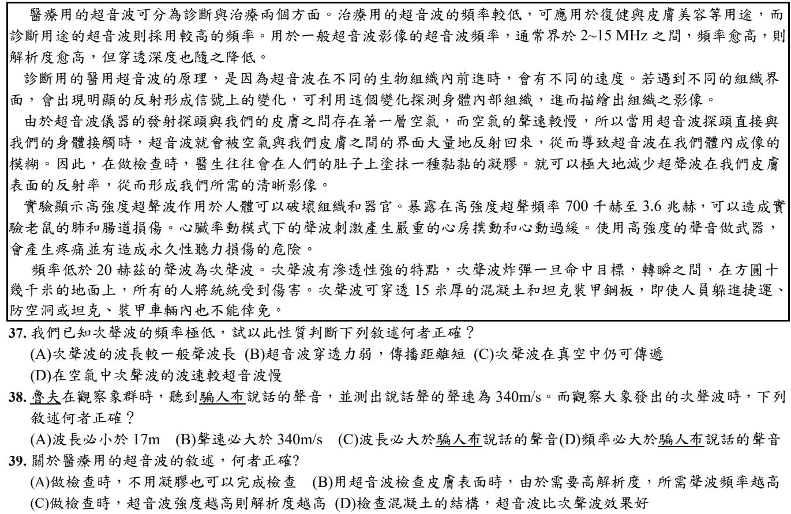
波長 ＝ 波速 ÷ 頻率。同在空氣中波速一樣，頻率極低 → 波長很長 ✓
(B) 題目要你從「頻率低」來推論，這句和次聲波無關。(C) 次聲波也是聲波，真空中不能傳。(D) 同一介質中，次聲波和超聲波波速相同。
次聲波 ＝ 頻率低於 20 Hz。人說話的聲音一定在 20 Hz 以上 → 大象次聲波的頻率比較低。
同在空氣中、聲速一樣，頻率低 → 波長比較長 → (C) ✓
(A) 波長 ＝ 340 ÷ 20 ＝ 17 m，次聲波頻率更低，波長要大於 17 m。(B) 同一空氣，聲速一樣是 340 m/s。(D) 頻率比較低。
文章說：頻率愈高，解析度愈高，但穿透深度降低。檢查皮膚表面不需要穿很深、要看得清楚 → 用高頻率 ✓
(A) 文章說要塗凝膠，不然超聲波會在空氣和皮膚的界面大量反射。(C) 解析度看的是頻率，不是強度。(D) 文章說能穿透 15 米厚混凝土的是次聲波。
如右圖是臺中科學博物館千里傳音示意圖，圖中可表示出聲音的哪一個現象？
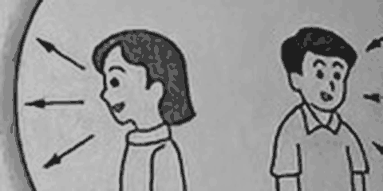
- (A) 反射
- (B) 折射
- (C) 漫射
- (D) 共振
兩個人背對背站在兩個大圓盤前，小聲說話也聽得到——聲音打到弧形的盤面反射、集中到對面那個人耳邊。
下列關於回聲的敘述，何者錯誤？
- (A) 回聲若與原聲重疊，則聲音會變得更響亮
- (B) 空曠的地方亦有可能產生回聲，只是聲音較不響亮
- (C) 聲波若遇到柔軟或有孔隙的表面時，其會吸收聲波，而使回聲變弱
- (D) 當聲波產生回聲時，我們的耳朵只能聽到回聲，無法聽到原聲
原聲先到、回聲後到，兩個都聽得到（相隔太近時會疊在一起變響亮）。「只聽到回聲」不可能 → (D) 錯。
關於回聲及其應用，下列哪一項敘述是錯誤的？
- (A) 在大禮堂裡說話常有回聲，是因為聲音有反射現象
- (B) 船上用來偵測海底深度的聲納裝置，是利用聲波的反射現象
- (C) 在小房間內聽不到回聲，是因為在小房間內聲音不會反射
- (D) 傳聲筒可以將聲音傳的比較遠，是利用聲波的反射現象
小房間裡聲音照樣反射，只是牆太近，回聲和原聲相隔不到 0.1 秒，耳朵分不出來，聽起來像同一個聲音（還變得比較響）。(C) 錯。
下列何者不是因為回聲所造成的現象？
- (A) 在空教室內說話比較響亮
- (B) 在一些設計過的涼亭內說話，聲音可以回響許久
- (C) 在空曠的大禮堂談話時，聲音比較混雜，不易聽清楚
- (D) 在游泳池水中仍可以聽見岸邊同學的呼叫聲
(D) 是聲音從空氣傳進水裡（介質可以傳聲），和反射無關。其他三個都是回聲在作用。
下列關於回聲的敘述，何者錯誤？
- (A) 回聲若與原聲重疊，則聲音會變得更響亮
- (B) 空曠的地方亦有可能產生回聲，只是聲音較不響亮
- (C) 當聲波產生回聲時，我們的耳朵只能聽到回聲，無法聽到原聲
- (D) 聲波若遇到柔軟或有孔隙的表面時，其會吸收聲波，而使回聲變弱
和第 2 題一模一樣，只是選項換了位置：錯的是「只能聽到回聲、聽不到原聲」→ 這次在 (C)。
考試常這樣：同一題把選項洗牌。記的是「哪一句錯」，不是「選哪個字母」。
當前進的波遇到障礙物時，返回原來介質的現象稱為什麼？
- (A) 反射
- (B) 折射
- (C) 漫射
- (D) 斜射
「碰到東西、彈回原來的介質」＝反射。若是穿進另一種介質、方向偏折，才是折射。
將手圈成喇叭狀呼叫遠處的好朋友，聲音會變得較為清晰，是利用聲波的何種特性？
- (A) 吸收
- (B) 反射
- (C) 折射
- (D) 干涉
手圍成的喇叭讓聲音在手掌間反射、集中往前送，不會四散。傳聲筒也是同一個道理。
下列何種現象的原理和聲音的反射無關？
- (A) 蝙蝠飛行時可利用聲波定位
- (B) 聲納可以用來探測魚群位置
- (C) 在山谷中叫喊可以聽到回聲
- (D) 振動的音叉放入水中使水花四濺
(D) 證明的是「發聲的物體在振動」，跟反射無關。(A)(B)(C) 都是靠回聲。
下列何種現象的原理和聲音的反射無關？
- (A) 在山谷喊叫可以聽到回音
- (B) 傳聲筒能夠使聲音傳得較遠
- (C) 振動的音叉可以激起水花
- (D) 聲納可探測海底深度
和上一題同一招，這次放在 (C)：音叉激起水花 → 證明發聲體在振動，和反射無關。
在狹小的浴室內唱歌，音量效果較佳，其原因為何？
- (A) 沒有回音的生成
- (B) 回聲與原聲可清楚區分
- (C) 聲音直接穿透牆壁
- (D) 回聲與原聲產生重疊的效果
浴室小、牆面又光滑：回聲很強而且來得很快（不到 0.1 秒），和原聲疊在一起 → 聽起來更響亮。
在禮堂或音樂廳常可見到其四周懸掛紅色簾幕，其最主要之目的為何？
- (A) 純粹為增加美觀之裝飾
- (B) 吸收聲波以減少回聲
- (C) 反射聲波以增大音量
- (D) 阻擋光照以避免聲速變慢
柔軟的布料會吸收聲波，回聲變少，台上的聲音才不會糊成一團。
華勳為一家劇院重新裝潢，為了防止聲音被回聲所干擾，他可以在劇院四周的牆壁上，做下列哪幾項處理？甲.貼上多孔的木板；乙.懸掛柔軟的布幔；丙.加些裝飾品，使牆面凹凸不平；丁.焊上堅硬又光滑的鐵板。
- (A) 甲乙丙丁
- (B) 甲乙丙
- (C) 甲乙丁
- (D) 乙丙丁
減少回聲有兩招：吸收（多孔、柔軟：甲、乙）和打散（凹凸不平，反射方向亂掉：丙）。
丁「堅硬又光滑」正好最會反射，會讓回聲更嚴重。→ 甲乙丙。
有一聲波入射障礙物的情形如右圖所示，箭號表示聲波前進方向，試問此聲波碰撞到障礙物時之反射角為幾度？
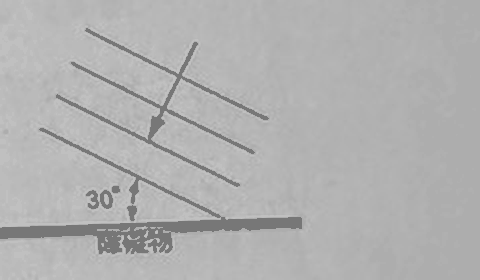
- (A) 30°
- (B) 60°
- (C) 45°
- (D) 70°
圖中的斜線是波前（一排一排的波），30° 標的是波前和障礙物表面的夾角。
箭號（前進方向）和波前垂直，所以箭號和法線（垂直於表面的線）的夾角也是 30° → 入射角 30°。反射角 ＝ 入射角 ＝ 30°。
⚠ 這題的關鍵是看懂 30° 標的是哪兩條線的夾角。照片上 30° 標在「波前斜線」和障礙物之間，所以答案是 30°；若老師的解讀是「箭號和障礙物」的夾角，入射角就變成 60°。請以老師講解為準。
回聲與原聲的聲波相比較，何者會改變？
- (A) 波速
- (B) 波長
- (C) 頻率
- (D) 振幅
反射回來還在同一種介質裡：波速不變、頻率不變、波長不變。被牆壁吸走一部分能量 → 振幅變小。
原聲與回聲要相隔 0.1 秒以上，人耳才可以分辨；而聲音的傳播速率（v）與當時的溫度（T）有關，其關係為：V（m/s）＝ 331（m/s）＋ 0.6T（°C）。如果竹君和一面大牆壁相距 17 公尺，當他向牆壁高聲喊叫而想聽到自己的回聲，請問當時的溫度不能超過多少 °C？
- (A) 15
- (B) 20
- (C) 25
- (D) 30
來回 34 公尺，要花 0.1 秒以上 → 聲速不能超過 34 ÷ 0.1 ＝ 340 m/s。
331 ＋ 0.6T ≤ 340 → 0.6T ≤ 9 → T ≤ 15 °C。溫度更高、聲音更快，回聲就太早回來分不出了。
人耳要分辨出原聲與回聲，兩者至少須間隔 0.1 秒，若聲速為 280 公尺／秒，則東東講話處距離牆壁至少多少公尺，才能分辨出原聲與回聲？
- (A) 17 公尺
- (B) 34 公尺
- (C) 14 公尺
- (D) 28 公尺
0.1 秒走 280 × 0.1 ＝ 28 公尺（來回），單程 ＝ 28 ÷ 2 ＝ 14 公尺。
(A) 17 是聲速 340 時的答案——這題聲速是 280，別直接背 17。
有一船以 10 m/s 速度向山航行，並發出鳴笛聲，如左下圖。若船於 6 秒後聽到回聲，試問船原本離山多遠？（聲速為 340 m/s）
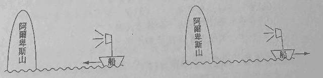
- (A) 1050 公尺
- (B) 990 公尺
- (C) 1020 公尺
- (D) 1000 公尺
畫線段想：聲音從船走到山、再走回來和船相遇；船同時也往山前進。
聲音走的 ＋ 船走的 ＝ 2 倍原距離：340 × 6 ＋ 10 × 6 ＝ 2040 ＋ 60 ＝ 2100 → 原距離 ＝ 2100 ÷ 2 ＝ 1050 公尺。
有一船離山 720 m 並遠離山而航行，如右上圖。今船發出鳴笛聲後 6 秒聽到回聲，試問船速為何？（聲速為 340 m/s）
- (A) 10 m/s
- (B) 20 m/s
- (C) 50 m/s
- (D) 100 m/s
聲音 6 秒走 340 × 6 ＝ 2040 公尺：先走 720 到山，再從山追回船。船這時已經在 720 ＋ 6v 的地方。
720 ＋ (720 ＋ 6v) ＝ 2040 → 6v ＝ 600 → v ＝ 100 m/s。
100 m/s ＝ 時速 360 公里，比高鐵還快——題目數字不太寫實，但算法是對的。
試問甲、乙兩峭壁相距多遠？
- (A) 1700 公尺
- (B) 1020 公尺
- (C) 850 公尺
- (D) 680 公尺
甲的回聲 2 秒 → 到甲的距離 ＝ 340 × 2 ÷ 2 ＝ 340 公尺。
乙的回聲再 1 秒，共 3 秒 → 到乙的距離 ＝ 340 × 3 ÷ 2 ＝ 510 公尺。
安琴站在兩峭壁中間 → 相距 340 ＋ 510 ＝ 850 公尺。
安琴聽到第二聲回聲後再過幾秒可聽到第三聲回聲？
- (A) 2 秒
- (B) 3 秒
- (C) 4 秒
- (D) 5 秒
第三聲是兩面峭壁都彈過一次的聲音：例如先到甲（340）→ 彈到乙（850）→ 回到安琴（510），共 1700 公尺 → 1700 ÷ 340 ＝ 5 秒。
第二聲在第 3 秒，第三聲在第 5 秒 → 再過 2 秒。
在圖(二)中，當樂隊在 F1 處演奏時，假設聲音對天花板的入射角為 θ，反射角為 Φ，則 θ 與 Φ 的關係為？
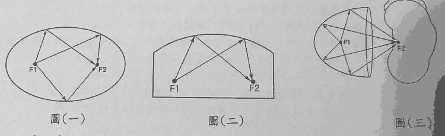
- (A) θ ＞ Φ
- (B) θ ＜ Φ
- (C) θ ＝ Φ
- (D) θ 和 Φ 沒有一定的關係
反射定律：入射角 ＝ 反射角，不管打在平面還是曲面上都成立。
承上題，若樂隊改在 F2 演奏，則音樂聲會不會反射後在 F1 集中？
- (A) 會，遵守反射定律
- (B) 會，是由地板反射過去的
- (C) 不會，聲音只能由一個方向反射
- (D) 不會，天花板會吸收這些聲音
反射的路線可以倒過來走：F1 → 牆 → F2 成立，F2 → 牆 → F1 也一樣成立，因為每一次都遵守入射角 ＝ 反射角。
金妮想要幫榮恩減少回聲的干擾，下面哪種方法是對減少回聲最沒有幫助的？
- (A) 在牆上貼海綿
- (B) 將牆塗成白色
- (C) 在牆上掛布幔
- (D) 將牆做得粗糙不平
顏色影響的是光，不是聲音。海綿、布幔會吸收聲音；粗糙不平會把反射打散。→ (B) 沒幫助。
金妮想要將木門改裝，讓聲音比較不容易傳出去，何種方法效果最好？
- (A) 將門改成鐵門
- (B) 將門塗成白色
- (C) 做成有真空夾層的門
- (D) 將門做得凹凸不平
聲音要靠介質才能傳。門中間做一層真空，聲音就過不去了。（雙層隔音窗就是這個原理，中間抽成低壓或填空氣層。）
(A) 鐵是固體，傳聲更快更好，反而不隔音。
關於超聲波，下列敘述何者正確？
- (A) 凡是人耳聽不見的聲音即為超聲波
- (B) 超聲波的傳播速率較一般聲波快
- (C) 超聲波不須介質即可傳播
- (D) 有些動物可聽見部分超聲波
(A) 聽不見的還有次聲波（低於 20 Hz）✗。(B) 同一環境中聲速都一樣 ✗。(C) 超聲波也是聲波，要介質 ✗。
(D) 狗、蝙蝠、海豚都聽得到人聽不到的高頻聲音 ✓
蝙蝠盲目飛行時，利用回聲測知牆壁等障礙物之位置，但其發出的聲音人類卻聽不到的原因為何？
- (A) 聲音太小
- (B) 頻率太高
- (C) 波長太長
- (D) 振幅太大
蝙蝠發的是超聲波，頻率高於 20000 Hz，超過人耳能聽的範圍。（頻率太高 → 波長反而很短，所以 (C) 也不對。）
下列有關超聲波的敘述，何者正確？
- (A) 人耳聽不到的聲音就是超聲波
- (B) 聲音的速度超過 340 m/s 即是超聲波
- (C) 振幅超過 340 m/s 叫超聲波
- (D) 我們無法利用超聲波由外太空的太空船上傳訊息回地球
超聲波是看頻率（＞ 20000 Hz），不是看速度或振幅 → (B)(C) 錯；(A) 漏了次聲波。
(D) 太空是真空，任何聲波（包括超聲波）都傳不過去 ✓。太空船要用電磁波（無線電）傳訊息。
順發二號漁船在海面上，以聲納偵測魚群，0.8 秒後收到回聲，若海水傳聲速率為每秒 1500 公尺，則魚群與漁船的距離約為多少公尺？
- (A) 600
- (B) 1200
- (C) 1875
- (D) 3750
來回 0.8 秒 → 單程 0.4 秒 → 1500 × 0.4 ＝ 600 公尺。(B) 1200 是忘了除以 2。
蝙蝠的飛行，是利用其發出的聲波來判別牠與物體的相對位置與距離，如果超聲波傳播的速度是 310 m/s，而蝙蝠接收到反射波後的反應時間是 0.3 秒；則一隻以每秒 10 公尺等速度直線飛行的蝙蝠，必須與障礙物至少保持多少距離，才不會撞到障礙物？
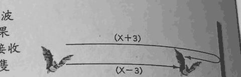
- (A) 2.4 公尺
- (B) 3.0 公尺
- (C) 3.2 公尺
- (D) 4.0 公尺
分兩段想。① 聽到回聲後還要 0.3 秒才轉彎，這段飛了 10 × 0.3 ＝ 3 公尺——所以聽到回聲的那一刻，離牆至少要 3 公尺。
② 發聲到聽到回聲花了 t 秒：設發聲時離牆 x 公尺。聲音走「x 去 ＋ (x － 10t) 回」＝ 310t，而且聽到時離牆 x － 10t ＝ 3。
由第二式 x ＝ 3 ＋ 10t 代入：310t ＝ 2(3 ＋ 10t) － 10t ＝ 6 ＋ 10t → 300t ＝ 6 → t ＝ 0.02 秒 → x ＝ 3 ＋ 0.2 ＝ 3.2 公尺。
有一架直昇機要利用聲波探測海裡潛水艇的所在位置，已知直昇機在海面上空 90 公尺處，聲音在空氣中的傳播速度為 300 m/s，聲音在海水中的傳播速度為 1500 m/s，直昇機發出聲波後 1.2 秒收到回聲，試問潛水艇離海面多少公尺深？
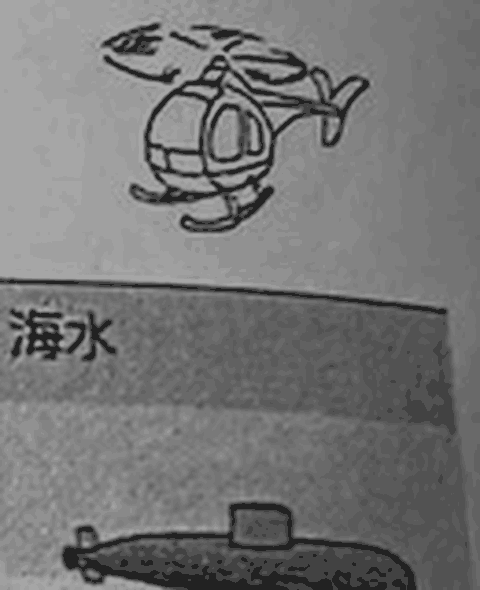
- (A) 150 公尺
- (B) 300 公尺
- (C) 450 公尺
- (D) 600 公尺
空氣那一段：來回 180 公尺 ÷ 300 ＝ 0.6 秒。剩下 1.2 － 0.6 ＝ 0.6 秒在水裡來回。
水中單程 0.3 秒 → 深度 ＝ 1500 × 0.3 ＝ 450 公尺。
小美站在離山壁 25 m 的地方大叫一聲，回聲很微弱、聽不太清楚。下列哪一種做法無法幫助她聽清楚回聲？
- (A) 兩手掌彎成弧形放在耳朵後方
- (B) 叫得更大聲
- (C) 兩手圍成喇叭狀放在嘴巴前面
- (D) 改用更尖、更高的聲音叫
聽不清楚是因為回聲太小聲，要解決的是響度。
(A) 手掌幫耳朵收集更多反射回來的聲音。(B) 原聲大聲，回聲也跟著大聲。(C) 喇叭狀讓聲音集中往山壁傳，反射回來的也比較多。
(D) 聲音尖不尖是音調（頻率），不會讓回聲變大聲。
飛機黑盒子沉入海中後，會發出頻率 30000 Hz 的定位聲波。潛水搜救員游到黑盒子附近時，能不能用耳朵直接聽到這個聲音？
- (A) 能，因為黑盒子的聲音很大聲
- (B) 不能，因為人在水中完全聽不到任何聲音
- (C) 不能，因為這個頻率超過人耳能聽到的範圍
- (D) 能，因為聲音在水中跑得比較快
人耳大約只聽得到 20～20000 Hz 的聲音。30000 Hz 超過上限，是超聲波，再大聲也聽不到，要靠儀器接收。
(A) 響度再大也改變不了頻率。(B) 水能傳聲，在水中還是聽得到一般聲音。(D) 聲速快慢和聽不聽得到無關。
第 3 章 ⑧ 多變的聲音（響度、音調、音色）50 題
否。音色由發聲體本身（材質、構造、發聲方式）決定，對應波形，是聲音的「指紋」。
鋼琴和小提琴可以調成一樣高（音調）、一樣大聲（響度），但音色調不成一樣——所以閉上眼睛也聽得出是哪種樂器。
錯。音調只由音叉本身的固有頻率決定——那是音叉的長度、粗細、材質決定的，刻在音叉上的那個「440 Hz」不會因為你敲哪裡而改變。
敲上方或敲下方、敲用力或敲輕，改變的是振幅，也就是響度。
是非題把「音調」換成「響度」就會變成對的。看到是非題，先找出那個可以被替換掉的關鍵詞——出題老師動的就是那個字。
是。這題就是上一題（113 年是非題第 6 題）把「音調」換成「響度」的版本。
音叉的音調固定；敲的位置和力道改變的是振幅，也就是響度。敲在叉臂上方（離底座遠），叉臂擺動幅度比較大，聲音比較響。
⚠️ 補充：響度主要看敲得多用力，題目沒說力道一樣；這題是自行解出的，如果考試遇到類似敘述，請問老師這一題怎麼算。
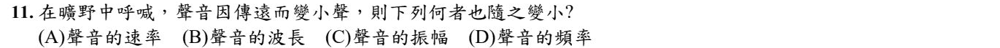
「變小聲」＝響度變小 → 對應振幅變小。
其他三個為什麼不會變？
· 速率：由空氣決定，和你喊多遠無關（都是 340 m/s）
· 頻率：由聲帶決定，傳遠了音也不會變低沉
· 波長：波長 ＝ 波速 ÷ 頻率，上面兩個都沒變，它自然也沒變
聲音傳遠了會變小聲，是因為能量散開到愈來愈大的範圍。散開的是能量，不是音高。
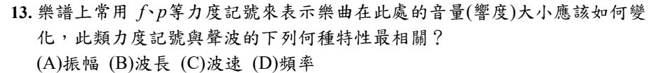
力度記號（f 強、p 弱）講的是音量大小 ＝ 響度。響度由振幅決定 → (A)。
(D) 頻率決定的是音調（高低）；(B)(C) 波長、波速和大小聲無關。
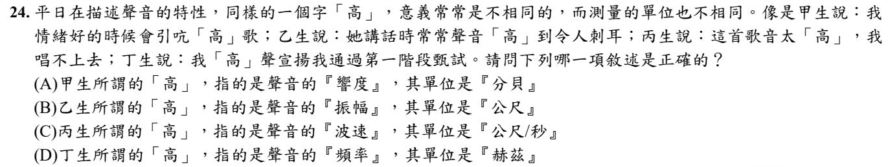
先把四句話翻譯成物理：
甲「引吭高歌」＝大聲唱 → 響度 ✓
乙「高到令人刺耳」＝聲音很尖 → 音調（不是振幅）
丙「音太高唱不上去」＝音高 → 音調（不是波速）
丁「高聲宣揚」＝大聲說 → 響度（不是頻率）
只有 (A) 的判讀和單位都對。
這題就是這一章的縮影：中文的「高」是一個字，物理上是兩件事。判斷方法是問「這句話在描述音量還是音高」，再去配單位。
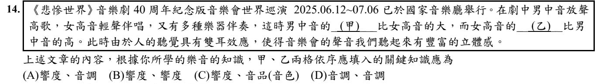
甲：男中音「放聲高歌」、比女高音大 → 大小聲 → 響度。
乙：女高音比男中音高 → 音高 → 音調。
→ 響度、音調 (A)。和 113-24 一樣：先問自己「這是在講大小聲，還是在講高低」。
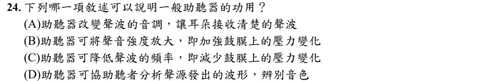
助聽器的工作是把聲音放大 → 振幅變大 → 鼓膜受到的壓力變化變大 → 聽得到 ✓
(A)(C) 改變音調或頻率，聲音會走樣，不是助聽器要的。(C) 而且壓力變化變小會更聽不到。(D) 分析音色是大腦的工作，助聽器沒有這個功能。
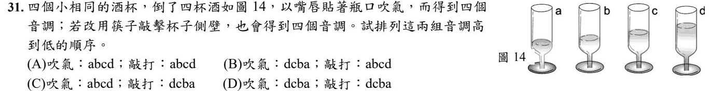
兩種玩法，振動的東西不一樣：
吹氣：振動的是杯子裡的空氣柱。空氣柱愈短，音調愈高。d 酒最多、空氣柱最短 → 吹氣由高到低 dcba。
敲杯子：振動的是杯子連同裡面的酒。裝得愈多、愈重，振動愈慢，音調愈低。a 酒最少 → 敲打由高到低 abcd。
→ (B)。
灌水時發聲的是瓶子裡的空氣柱。水位升高 → 空氣柱變短 → 振動變快 → 音調升高 ✓
和上一題吹酒杯是同一個道理：空氣柱愈短，聲音愈尖。
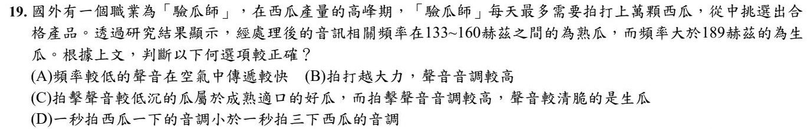
文章：熟瓜 133～160 Hz（頻率低 → 音調低沉），生瓜大於 189 Hz（頻率高 → 音調較高、清脆）→ (C) ✓
(A) 同一空氣中，各種頻率的聲音傳得一樣快。(B) 拍得用力改變的是響度，不是音調。(D) 一秒拍幾下是「拍的次數」，不是每一聲的音調。
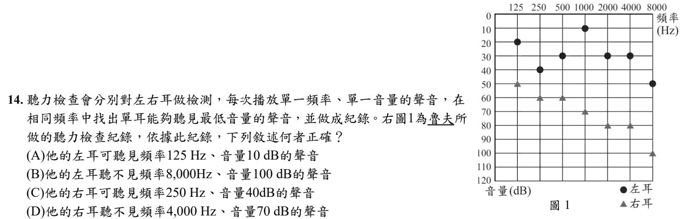
先讀懂圖：每個點代表「這個頻率，最小要多大聲才聽得到」。聲音的分貝大於等於那個點才聽得到，小於就聽不到。（●左耳、▲右耳）
(A) 左耳 125 Hz 至少要 20 dB，10 dB 聽不到 ✗
(B) 左耳 8000 Hz 至少要 50 dB，100 dB 聽得到 ✗
(C) 右耳 250 Hz 至少要 60 dB，40 dB 聽不到 ✗
(D) 右耳 4000 Hz 至少要 80 dB，70 dB 聽不到 ✓
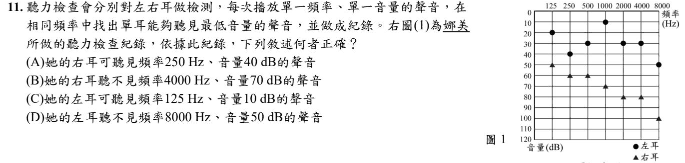
和 113 年那題同一張圖，選項換了位置。規則一樣：分貝 ≥ 那個點才聽得到。
(A) 右耳 250 Hz 至少要 60 dB，40 dB 聽不到 ✗
(B) 右耳 4000 Hz 至少要 80 dB，70 dB 聽不到 ✓
(C) 左耳 125 Hz 至少要 20 dB，10 dB 聽不到 ✗
(D) 左耳 8000 Hz 剛好 50 dB 就聽得到，不是聽不到 ✗
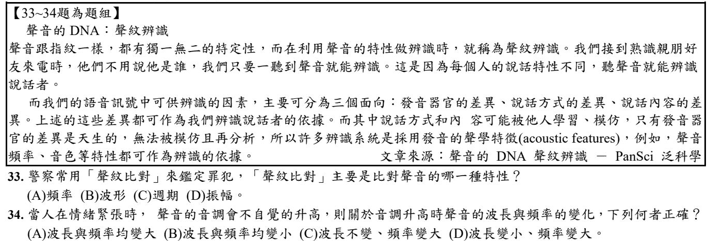
頻率、振幅都可以模仿——你可以講得跟別人一樣高、一樣大聲。
但波形是由發音器官的形狀決定的（聲帶、口腔、鼻腔），那是天生的、模仿不來的，所以才拿它來當「聲音的指紋」。
波形對應的就是音色——這一章三個名字裡最少被考、但最有意思的一個。
音調升高 → 頻率變大。
再看波長：波長 ＝ 波速 ÷ 頻率。波速在同一個空氣裡不會變，分母的頻率變大 → 波長變小。
(C) 錯在以為波長是獨立的。只要波速固定，波長和頻率就是綁死的一對，一個變大另一個一定變小。
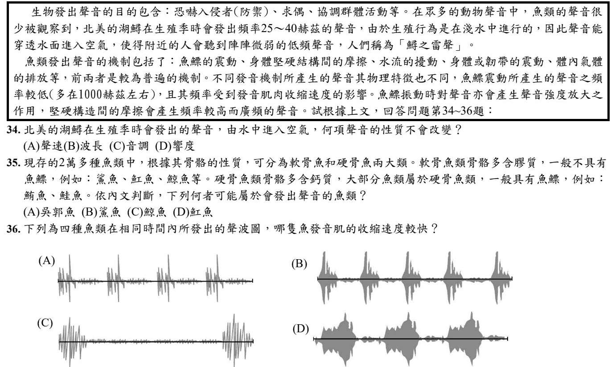
聲音換介質時，頻率不變（由發聲的湖鱘決定）→ 音調不變 ✓
會變的：聲速（水 → 空氣變慢）、波長（＝ 聲速 ÷ 頻率，跟著變短）、響度（穿過水面時能量大量損失，所以人們只聽到「微弱」的聲音）。
文章：最普遍的發聲方式是魚鰾振動。軟骨魚（鯊魚、魟魚、鯨魚等）一般沒有魚鰾，硬骨魚一般有魚鰾。
吳郭魚是硬骨魚 → 有魚鰾 → 可能發出聲音 → (A)。
順便一提：鯨魚其實是哺乳類，不是魚。但這題照文章分類作答就好。
文章：魚鰾聲音的頻率受發音肌收縮速度影響——肌肉收縮一次就「咚」一下，收縮得愈快，同樣時間裡的聲響就愈多。
四張圖時間一樣長，數一數聲響（一叢一叢的波）：(A) 4 個、(B) 5 個、(C) 2 個、(D) 3 個 → (B) 最快。
⚠️ 補充：這題是自行解出的，也有人會改看每一叢裡面的波有多密；如果考試遇到類似的圖，請問老師這一題怎麼看。
一般將音階分為 Do、Re、Mi、Fa、Sol、La、Si，其排列順序為何？
- (A) 波長由短而長
- (B) 聲速由小而大
- (C) 振幅由小而大
- (D) 頻率由低而高
Do Re Mi… 一個比一個高 → 音調愈來愈高 → 頻率由低而高。（頻率變高，波長反而由長變短，所以 (A) 方向反了。）
小緯彈吉他時，發現有一根弦的音調比原來較低，且有點走音了，請問他該如何處理？
- (A) 將弦調緊
- (B) 將弦調鬆
- (C) 換一根較粗的弦
- (D) 加快撥弦的速度
音調太低 → 要把頻率拉高 → 弦調緊（愈緊愈高）。換粗弦反而更低；撥快只是節奏變快。
音叉可以作為調音的工具，最主要是因為它具有下列哪一種特性？
- (A) 音質優美
- (B) 音調較低
- (C) 響度較大
- (D) 頻率固定
一支音叉不管怎麼敲，都只發出同一個頻率，所以拿它當標準音。
下列何者為聲音的振動頻率所決定？
- (A) 聲音傳播的遠近
- (B) 聲音的強弱
- (C) 聲音的高低
- (D) 聲音的特色
三要素對號入座：頻率 → 音調（高低）；振幅 → 響度（強弱）；波形 → 音色（特色）。
小茂在水龍頭下以空寶特瓶裝水，當瓶子的水越來越多時，水由上方落到水面的距離也越來越短，試問聽到水落到瓶中的聲音變化為何？
- (A) 頻率越來越高，響度越來越大
- (B) 頻率越來越高，響度卻越來越小
- (C) 頻率越來越低，響度越來越大
- (D) 頻率越來越低，響度越來越小
音調：瓶裡的空氣柱愈來愈短 → 頻率愈來愈高（裝水時那個「嘟～」愈來愈尖，就是這個）。
響度：題目特別提到「落下的距離愈來愈短」→ 水打到水面的力道變小 → 響度變小。→ (B)。
⚠ 響度這一半要靠題目給的線索（落下距離變短）推；如果老師講法不同，以老師為準。
關於排簫所吹出的聲音，下列敘述何者正確？
- (A) 管內空氣柱越長，所吹出的音量越大
- (B) 管內空氣柱越長，所吹出的音量越小
- (C) 管內空氣柱越長，所吹出的音調越高
- (D) 管內空氣柱越長，所吹出的音調越低
管樂器靠空氣柱振動：愈長愈低、愈短愈高。管子長短改變的是音調，不是音量。
阿康在彈吉他時，發現其中一條弦所彈撥出的聲音太低，下列關於阿康調音的敘述，何者正確？
- (A) 利用旋鈕將弦線調緊，以增加聲波振動的振幅
- (B) 利用旋鈕將弦線調緊，以增加聲波振動的頻率
- (C) 利用旋鈕將弦線調鬆，以增加聲波振動的振幅
- (D) 利用旋鈕將弦線調鬆，以增加聲波傳播的速率
太低 → 要提高頻率 → 調緊。調緊改變的是頻率（音調），不是振幅。
阿康音樂課想利用自製樂器來表演，他準備了 5 個相同的玻璃杯，並分別裝入不同體積的水，如右圖所示，阿康改以在杯口處吹氣，使杯子發出不同音調的聲音，試問杯子發出的聲音由低而高依序為何？
- (A) 甲乙丙丁戊
- (B) 戊丁丙乙甲
- (C) 丙乙丁甲戊
- (D) 乙丙丁戊甲
在杯口吹氣，振動的是杯子裡的空氣柱。水愈多、空氣柱愈短、音調愈高。
圖中甲的水最少（空氣柱最長、最低）→ 戊的水最多（最高）→ 由低而高：甲乙丙丁戊。
如果改成「用筷子敲杯子」，答案會反過來：那時振動的是杯子和水，水愈多愈重、振動愈慢、音愈低。
每秒打鼓 10 下時，所聽到鼓聲的頻率可能為多少赫？
- (A) 0.1
- (B) 10
- (C) 5000
- (D) 50000
陷阱：每秒打 10 下是敲的節奏，不是聲音的頻率。聲音的頻率是鼓皮每秒振動的次數。
人聽得到的範圍是 20～20000 Hz：(A)(B) 太低聽不到，(D) 太高聽不到 → 只有 (C) 5000 Hz 可能。
⚠ 第 10、11 題在講義上一字不差重複出現，應是排版重複，兩題答案相同。
金庸武俠小說中黃蓉與郭靖兩人在郊外遇到了西毒歐陽鋒，黃蓉與郭靖合力用魔琴對抗歐陽鋒，卻因功力不足，節節敗退，導致魔琴斷得只剩一根弦，幸好東邪黃藥師趕到，黃藥師利用僅剩的一根弦，發出各種音調的魔音而順利擊敗了歐陽鋒。則甲.改變彈弦的速率；乙.改變弦的鬆緊；丙.改變弦的長短；丁.改變弦的粗細；黃藥師是利用上述哪些方法而改變同一根弦的音調？
- (A) 甲乙丙
- (B) 乙丙丁
- (C) 乙丙
- (D) 丙
能改變弦的音調的有三個：長短、鬆緊、粗細。但只有一根弦，粗細沒辦法變 → 丁不行。
甲「彈得快慢」只改變節奏，不改變音調。→ 乙丙。
有甲、乙、丙、丁四條弦，材質、密度均相同，甲、乙、丙弦的粗細一樣，丁弦比甲、乙、丙弦粗，且可撥動的繩長部分等長，如下圖所示，用手指於 P 點撥動後，皆可聽到因弦振動而發出的聲音，則音調由高至低的順序是下列何者？
- (A) 丙＞甲＞乙＞丁
- (B) 甲＝乙＝丙＞丁
- (C) 甲＝乙＞丙＝丁
- (D) 甲＝乙＞丙＞丁
長度一樣，比鬆緊（掛多重）和粗細：
甲、乙都被 10 kg 拉著 → 一樣緊、一樣細 → 甲 ＝ 乙。
丙兩端各掛 5 kg，弦上的拉力相當於 5 kg（不是 10 kg！）→ 比甲乙鬆 → 比較低。
丁也是 5 kg，但比較粗 → 比丙更低。
→ 甲 ＝ 乙 ＞ 丙 ＞ 丁。
最常錯在丙：兩邊各 5 kg 不是加起來 10 kg。就像拔河兩邊各用 5 公斤的力，繩子上的拉力是 5 公斤。
坐在教室後面聽老師上課，感覺老師的聲音比較小聲，其原因是聲音傳到後面時，下列何者變小了？
- (A) 波長
- (B) 頻率
- (C) 速度
- (D) 振幅
傳得愈遠，能量散開愈多 → 振幅變小 → 響度變小。音調（頻率）、波長、速度都沒變。
「分貝」是測量什麼物理量的單位？
- (A) 聲音的大小
- (B) 聲音的高低
- (C) 聲音的速率
- (D) 聲音的特色
分貝（dB）→ 響度（大小）；赫茲（Hz）→ 音調（高低）。
已知響度每增加 10 分貝，聲音強度增強 10 倍，則 30 分貝的聲音強度是 0 分貝的多少倍？
- (A) 3
- (B) 30
- (C) 300
- (D) 1000
每加 10 分貝 → ×10。0 → 10 → 20 → 30 分貝，乘了三次 10：10 × 10 × 10 ＝ 1000 倍。
分貝是「乘」上去的，不是「加」上去的——所以 30 分貝不是 30 倍。
小緯聆聽音響中的交響樂 CD，他發現裡面共有 5 種不同樂器發出的聲音，請問他主要是根據這些樂器的何種性質不同而做出判斷的？
- (A) 音量不同
- (B) 音調不同
- (C) 音色不同
- (D) 波長不同
不同樂器就算拉同一個音、同樣大聲，聽起來還是不一樣——那就是音色（波形）。
爸爸覺得太大聲，主要原因為何？
- (A) 聲波的波形太大
- (B) 聲波的波長太長
- (C) 聲波的頻率太高
- (D) 聲波的振幅太大
大聲 ＝ 響度大 ＝ 振幅大。
媽媽覺得歌手的聲音好高，主要原因為何？
- (A) 聲波的波形較大
- (B) 聲波的波長較長
- (C) 聲波的頻率較高
- (D) 聲波的振幅較大
聲音「高」＝音調高 ＝ 頻率高。（注意：生活上說「聲音好高」有時是指大聲，但這裡媽媽說的是音高。）
典穎一聽就知道是張惠妹唱的，主要根據聲音的何種特性？
- (A) 響度
- (B) 音調
- (C) 音色
認得出是誰的聲音 → 音色。每個人的聲帶、口腔不一樣，波形就不一樣。
小明把玩了上述幾種樂器，發現聲音聽起來都不同，這是因為樂器發出的聲波具有何種差異所致？
- (A) 頻率不同
- (B) 波形不同
- (C) 振幅不同
- (D) 分貝不同
「不同樂器」聽起來不一樣 → 音色 → 由波形決定。
小明決定買一個鼓，但卻發現鼓聲的音調太高，請問他應該如何調整？
- (A) 將鼓面放鬆
- (B) 將鼓面調緊
- (C) 用較大的力打鼓
- (D) 用較小的力打鼓
鼓面和琴弦一樣：愈緊愈高、愈鬆愈低。太高就放鬆。打的力氣大小只改變響度。
利用小提琴及長笛同時演奏相同的旋律時，主要可藉由何種特性來分辨兩種樂器的樂音？
- (A) 響度
- (B) 音調
- (C) 音色
- (D) 音量
「相同的旋律」＝音調一樣，那能分辨的就只剩音色。
響度、音調與發音體振動有何關係？
- (A) 響度越大，音調則越高，發音體之振動頻率亦越快
- (B) 響度越小，音調則越低，發音體之振動頻率亦越慢
- (C) 發音體振動頻率越快，則音調越高，響度卻不一定越大
- (D) 發音體振動頻率越快，則響度越大，但音調卻不一定越高
響度（振幅）和音調（頻率）是兩件獨立的事：大聲不一定高音，高音也不一定大聲。
頻率快 → 音調一定高；但響度看振幅，不一定大 → (C)。(D) 把兩者講反了。
許多樂器都設有共鳴箱，主要目的為何？
- (A) 提高聲音的音調
- (B) 增加聲音的響度
- (C) 改變聲音的音色
- (D) 增加聲音傳播的速率
共鳴箱裡的空氣和弦一起共振，讓更多空氣一起推動 → 聲音更大聲（響度增加）。
吉他、提琴等樂器的弦，都是裝在一個中空的木盒上，請問木盒的作用是什麼？
- (A) 使音色較美
- (B) 使音域較廣
- (C) 使聲音較響亮
- (D) 方便拿取
中空木盒就是共鳴箱 → 讓聲音更響亮。（和上一題同一個觀念。）
音叉裝在共鳴箱上，聲音明顯的比較大聲，請問這是因為共鳴箱使得聲音的哪一項性質改變？
- (A) 頻率變大
- (B) 振幅變大
- (C) 波長變長
- (D) 波速變快
比較大聲 ＝ 響度變大 ＝ 振幅變大。音叉的頻率沒變。
有五支音叉的振動頻率為：甲.200 Hz；乙.300 Hz；丙.350 Hz；丁.200 Hz；戊.350 Hz，當敲擊哪一支音叉時，其他四支音叉的任一者皆不會有共振產生？
- (A) 音叉甲
- (B) 音叉乙
- (C) 音叉丙
- (D) 音叉戊
甲和丁同為 200 Hz、丙和戊同為 350 Hz，都有「夥伴」。只有乙 300 Hz 找不到同頻率的 → 敲乙，沒有人共振。
當阿勇敲擊右圖的一個金屬製品時（質量 250 g、頻率 3000 Hz、純金製造），他感覺到身旁附近的另外四件金屬製品當中，有一件也跟著產生共鳴，試問應是圖中的哪個金屬製品？
- (A) 質量 200 g、頻率 2500 Hz、純銀製造
- (B) 質量 250 g、頻率 2800 Hz、純鉛製造
- (C) 質量 200 g、頻率 3000 Hz、純銅製造
- (D) 質量 220 g、頻率 3300 Hz、純金製造
共鳴只看一件事：頻率相同。質量、材料都是干擾項。3000 Hz → (C)。
(B) 質量一樣、(D) 材料一樣，都是故意放來騙你的。
古人沈括在一部七弦琴上各個音律宮位上放置小紙人，彈奏另一部七弦琴時，便可見到對應的宮位紙人會振動彈跳，沈括稱此現象為「應聲」，此即為聲音的何種現象？
- (A) 反射
- (B) 折射
- (C) 共振
- (D) 回聲
彈這一部琴的某個音，另一部琴同樣音高的那根弦跟著振動、把紙人震起來 → 共振。沈括在北宋就做了這個實驗，比西方早了好幾百年。
甲、乙兩個聲音：甲 85 分貝、300 Hz；乙 65 分貝、500 Hz。下列敘述何者正確？（響度每增加 10 分貝，聲音強度變為 10 倍）
- (A) 甲的音調比較高
- (B) 乙的音調比較高，甲的聲音強度是乙的 100 倍
- (C) 甲的聲音強度是乙的 20 倍
- (D) 兩者的音調相同，只是響度不同
音調看頻率：乙 500 Hz ＞ 甲 300 Hz → 乙的音調較高。
響度相差 85 − 65 ＝ 20 分貝 ＝ 2 個「10 分貝」→ 強度差 10 × 10 ＝ 100 倍。
(C) 20 倍是把分貝差直接當倍數。分貝每多 10，強度就再乘一次 10。
下列哪一個聲音最可能被認為是干擾生活的噪音？
- (A) 95 分貝、8000 Hz
- (B) 105 分貝、25000 Hz
- (C) 75 分貝、3000 Hz
- (D) 45 分貝、1000 Hz
先看人聽不聽得到：人耳約 20～20000 Hz。(B) 25000 Hz 是超聲波，雖然分貝最高，人卻聽不到，不會覺得吵。
剩下聽得到的 (A)(C)(D) 中，(A) 95 分貝最大聲，最容易成為噪音。
眼鏡行要清洗鏡片上的細小髒汙、又不能傷到精緻的鏡片，應該選哪一種清洗機？
- (A) 頻率較高的，因為氣泡多而細小、力道溫和
- (B) 頻率較低的，因為氣泡破掉的力道最強
- (C) 頻率較低的，因為人耳聽不到
- (D) 頻率高低沒有差別
依照文章：頻率高 → 氣泡又多又小、每個力道弱 → 能深入細小縫隙，又不容易傷到精緻物品。
(B) 力道強的低頻適合大顆、頑固的髒汙，但可能傷到精緻物品。(C) 超聲波不論高低頻，人耳都聽不到，這不是選擇的理由。
承上題，工廠要清洗沾滿大塊油泥的機械零件，應選擇哪一種清洗機？
- (A) 頻率較高的，因為氣泡數量最多
- (B) 頻率較高的，因為氣泡細小不傷物品
- (C) 頻率較低的，因為氣泡較大、破掉的力道較強
- (D) 頻率較低的，因為氣泡數量較少
大塊、頑固的髒汙需要力道強的衝擊 → 選低頻：氣泡較大，破掉的力道較強。
(D) 低頻氣泡確實比較少，但「氣泡少」不是它適合的原因，關鍵在力道強。